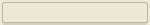
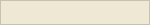
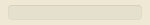
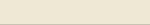
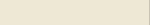
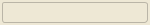
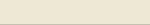
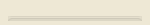
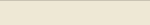

| Key | Value | Reference | Preview |
|---|---|---|---|
| %textForegroundHighlight | #000000 [000,000,000] | ||
| %textSelectionForegroundInactive | #000000 [000,000,000] | ||
| %textForeground | #000000 [000,000,000] | ||
| %caret | #000000 [000,000,000] | ||
| %shadow | #000000 [000,000,000] | ||
| %hoverHighlightDefault | #6A9ED3 [106,158,211] | ||
| %menuIconEnabled | #6E6E6E [110,110,110] | ||
| %textForegroundInactive | #777777 [119,119,119] | ||
| %controlBorderFocus | #7B9FC7 [123,159,199] | ||
| %glowFocusLineInactive | #7B9FC7 [123,159,199] | ||
| %glowFocusLine | #7B9FC7 [123,159,199] | ||
| %controlPassedFadeEnd | #7EE8A5 [126,232,165] | ||
| %textForegroundSecondary | #808080 [128,128,128] | ||
| %controlFillSecondary | #808080 [128,128,128] | ||
| %controlFadeEnd | #808080 [128,128,128] | ||
| %borderFocus | #83BFF5 [131,191,245] | ||
| %controlBorder | #878787 [135,135,135] | ||
| %fileIconBackground | #9AA7B0 [154,167,176] | ||
| %windowButtonDisabled | #9B9C9C [155,156,156] | ||
| %highlightFillMono | #9CA7B8 [156,167,184] | ||
| %borderTertiary | #A0A0A0 [160,160,160] | ||
| %controlTrack | #ABABAB [171,171,171] | ||
| %controlFillHighlightDisabled | #ABABAB [171,171,171] | ||
| %controlFillDisabled | #ABABAB [171,171,171] | ||
| %controlBorderFocusSelected | #ACCFF7 [172,207,247] | ||
| %menuIconDisabled | #AFB1B3 [175,177,179] | ||
| %controlBorderSecondary | #B4B4B4 [180,180,180] | ||
| %textIconDisabled | #B8BABA [184,186,186] | ||
| %backgroundSelectedSecondary | #BDBDBD [189,189,189] | ||
| %controlBorderDisabled | #BDBDBD [189,189,189] | ||
| %dropForeground | #C0C0C0 [192,192,192] | ||
| %textSelectionForegroundDisabled | #C0C0C0 [192,192,192] | ||
| %controlFadeStart | #C4C4C4 [196,196,196] | ||
| %widgetBorder | #C4C4C4 [196,196,196] | ||
| %controlBackground | #C4C4C4 [196,196,196] | ||
| %backgroundSelectedColorful | #C5CDDC [197,205,220] | ||
| %backgroundHoverColorful | #CCCFD5 [204,207,213] | ||
| %clickHighlightColorful | #CDD7E1 [205,215,225] | ||
| %clickHighlightOutline | #CFCFCF [207,207,207] | ||
| %widgetBorderInactive | #CFCFCF [207,207,207] | ||
| %clickHighlight | #CFCFCF [207,207,207] | ||
| %border | #D1D1D1 [209,209,209] | ||
| %borderSecondary | #D1D1D1 [209,209,209] | ||
| %clickHighlightSecondary | #D2D2D2 [210,210,210] | ||
| %highlightFill | #D5D5D5 [213,213,213] | ||
| %controlErrorFadeStart | #D64F4F [214,079,079] | ||
| %backgroundHoverSecondary | #D9D9D9 [217,217,217] | ||
| %backgroundHover | #DADADA [218,218,218] | ||
| %hoverHighlightColorful | #DAE1E9 [218,225,233] | ||
| %errorIconColor | #DB5860 [219,088,096] | ||
| %gridLine | #DDDDDD [221,221,221] | ||
| %hoverHighlightOutline | #DFDFDF [223,223,223] | ||
| %hoverHighlight | #DFDFDF [223,223,223] | ||
| %glowFocusErrorLine | #E0A8A9 [224,168,169] | ||
| %glowErrorLine | #E0A8A9 [224,168,169] | ||
| %glowWarning | #E2A53A [226,165,058] | ||
| %warningIconColor | #E2A53A [226,165,058] | ||
| %glowFocusError | #E53E4D [229,062,077] | ||
| %hoverHighlightSecondary | #E6E6E6 [230,230,230] | ||
| %backgroundColorful | #E6EBF0 [230,235,240] | ||
| %glowError | #EBBCBC [235,188,188] | ||
| %menuIconHovered | #ECECEC [236,236,236] | ||
| %menuIconSelectedSecondary | #EEEEEE [238,238,238] | ||
| %textSelectionForeground | #F0F0F0 [240,240,240] | ||
| %textCompSelectionForeground | #F0F0F0 [240,240,240] | ||
| %textContrastForeground | #F0F0F0 [240,240,240] | ||
| %textForegroundDefault | #F0F0F0 [240,240,240] | ||
| %textBackgroundInactive | #F2F2F2 [242,242,242] | ||
| %textBackgroundSecondaryInactive | #F2F2F2 [242,242,242] | ||
| %widgetFillInactive | #F2F2F2 [242,242,242] | ||
| %background | #F2F2F2 [242,242,242] | ||
| %backgroundColorfulInactive | #F2F2F2 [242,242,242] | ||
| %backgroundAlternative | #F2F5F9 [242,245,249] | ||
| %backgroundToolTip | #F7F7F7 [247,247,247] | ||
| %backgroundToolTipInactive | #F7F7F7 [247,247,247] | ||
| %controlErrorFadeEnd | #FB8F89 [251,143,137] | ||
| %textSelectionBackgroundSecondary | #FCFAED [252,250,237] | ||
| %dropBackground | #FCFAED [252,250,237] | ||
| %glowWarningLine | #FFD385 [255,211,133] | ||
| %backgroundContainer | #FFFFFF [255,255,255] | ||
| %backgroundHeader | #FFFFFF [255,255,255] | ||
| %controlFill | #FFFFFF [255,255,255] | ||
| %windowCloseHovered | #FFFFFF [255,255,255] | ||
| %widgetFill | #FFFFFF [255,255,255] | ||
| %textBackground | #FFFFFF [255,255,255] | ||
| %textBackgroundSecondary | #FFFFFF [255,255,255] | ||
| %controlFillFocus | #FFFFFF [255,255,255] | ||
| %textIconSelected | #FFFFFF [255,255,255] | ||
| %backgroundSelected | #FFFFFF [255,255,255] | ||
| %menuIconSelected | #FFFFFF [255,255,255] | ||
| %fileIconForeground | #231F20 [035,031,032] | ||
| %highlightFillFocus | #2675BF [038,117,191] | ||
| %windowButton | #050708 [005,007,008] | ||
| %controlPassedFadeStart | #34B171 [052,177,113] | ||
| %menuIconHighlight | #389FD6 [056,159,214] | ||
| %informationIconColor | #389FD6 [056,159,214] | ||
| %questionIconColor | #389FD6 [056,159,214] | ||
| %glowFocus | #3D94F2 [061,148,242] | ||
| %glowFocusInactive | #3D94F2 [061,148,242] | ||
| %textIconEnabled | #3E3E3C [062,062,060] | ||
| %highlightFillFocusSecondary | #4083C9 [064,131,201] | ||
| %widgetBorderDefault | #457CB6 [069,124,182] | ||
| %controlBorderSelected | #4982CC [073,130,204] | ||
| %widgetFillSelected | #4D89C9 [077,137,201] | ||
| %widgetFillDefault | #4D89C9 [077,137,201] | ||
| %controlFillHighlight | #4D89C9 [077,137,201] | ||
| %acceleratorForeground | #505050 [080,080,080] | ||
| %hyperlink | #589DF6 [088,157,246] | ||
| %textSelectionBackground | #5974AB [089,116,171] | ||
| %textCompSelectionBackground | #5974AB [089,116,171] | ||
| %fileIconHighlight | #59A869 [089,168,105] | ||
| %clickHighlightDefault | #5B94CE [091,148,206] | ||
| %shadowHeight | 2 | ||
| %borderThickness | 2 | ||
| %arcSecondaryFocus | 3 | ||
| %arcSecondary | 3 | ||
| %arc | 5 | ||
| %arcFocus | 5 | ||
| %shadowOpacityLight | 10 | ||
| %shadowOpacityStrong | 20 | ||
| %glowOpacity | 50 | ||
| %dropOpacity | 80 | ||
| %fileIconOpacity | 80 | ||
| %menuIconOpacity | 80 |
| Key | Value | Reference | Preview |
|---|---|---|---|
| AbstractButton.click.textAndMnemonic | click |
| Key | Value | Reference | Preview |
|---|---|---|---|
| AbstractDocument.redo.textAndMnemonic | Redo | ||
| AbstractDocument.undo.textAndMnemonic | Undo | ||
| AbstractDocument.addition.textAndMnemonic | addition | ||
| AbstractDocument.deletion.textAndMnemonic | deletion | ||
| AbstractDocument.styleChange.textAndMnemonic | style change |
| Key | Value | Reference | Preview |
|---|---|---|---|
| AbstractUndoableEdit.redo.textAndMnemonic | Redo | ||
| AbstractUndoableEdit.undo.textAndMnemonic | Undo |
| Key | Value | Reference | Preview |
|---|---|---|---|
| ArrowButton.up.icon | Icon [16,16] | ||
| ArrowButton.down.icon | Icon [16,16] |
| Key | Value | Reference | Preview |
|---|---|---|---|
| AuditoryCues.noAuditoryCues | Object[] | ||
| AuditoryCues.allAuditoryCues | Object[] | ||
| AuditoryCues.cueList | Object[] |
| Key | Value | Reference | Preview |
|---|---|---|---|
| ButtonUI | com.github.weisj.darklaf.ui.button.DarkButtonUI | ||
| Button.opaque | false | ||
| Button.rollover | false | ||
| Button.defaultButtonFollowsFocus | false | ||
| Button.borderless.drawOutline | false | ||
| Button.convertIconOnlyToBorderless | true | ||
| Button.shadow | #808080 [128,128,128] | ||
| Button.font | Font [family=Helvetica Neue,name=Helvetica Neue,style=plain,size=12] | ||
| Button.focusInputMap | InputMapUIResource | ||
| Button.onlyLabelInsets | Insets [0,0,0,0] | ||
| Button.borderlessRectangularInsets | Insets [0,0,0,0] | ||
| Button.margin | Insets [0,2,0,2] | ||
| Button.squareThinBorderInsets | Insets [4,4,4,4] | ||
| Button.thinBorderInsets | Insets [4,8,4,8] | ||
| Button.borderInsets | Insets [7,16,7,16] | ||
| Button.squareBorderInsets | Insets [7,7,7,7] | ||
| Button.squareFocusArc | 0 | ||
| Button.minimumArc | 0 | ||
| Button.textShiftOffset | 0 | ||
| Button.squareArc | 0 | ||
| Button.textIconGap | 4 | ||
| Button.border | DarkButtonBorder |  | |
| Button.arc | 5 | %arc | |
| Button.focusArc | 5 | %arcFocus | |
| Button.background | #F2F2F2 [242,242,242] | %background | |
| Button.borderThickness | 2 | %borderThickness | |
| Button.activeFillColorClick | #CFCFCF [207,207,207] | %clickHighlight | |
| Button.borderless.click | #CFCFCF [207,207,207] | %clickHighlight | |
| Button.defaultFillColorClick | #5B94CE [091,148,206] | %clickHighlightDefault | |
| Button.borderless.outline.click | #CFCFCF [207,207,207] | %clickHighlightOutline | |
| Button.focusBorderColor | #7B9FC7 [123,159,199] | %glowFocusLine | |
| Button.borderless.hover | #DFDFDF [223,223,223] | %hoverHighlight | |
| Button.activeFillColorRollOver | #DFDFDF [223,223,223] | %hoverHighlight | |
| Button.defaultFillColorRollOver | #6A9ED3 [106,158,211] | %hoverHighlightDefault | |
| Button.borderless.outline.hover | #DFDFDF [223,223,223] | %hoverHighlightOutline | |
| Button.shadowHeight | 2 | %shadowHeight | |
| Button.foreground | #000000 [000,000,000] | %textForeground | |
| Button.selectedButtonForeground | #F0F0F0 [240,240,240] | %textForegroundDefault | |
| Button.disabledText | #777777 [119,119,119] | %textForegroundInactive | |
| Button.activeBorderColor | #C4C4C4 [196,196,196] | %widgetBorder | |
| Button.defaultBorderColor | #457CB6 [069,124,182] | %widgetBorderDefault | |
| Button.inactiveBorderColor | #CFCFCF [207,207,207] | %widgetBorderInactive | |
| Button.activeFillColor | #FFFFFF [255,255,255] | %widgetFill | |
| Button.defaultFillColor | #4D89C9 [077,137,201] | %widgetFillDefault | |
| Button.inactiveFillColor | #F2F2F2 [242,242,242] | %widgetFillInactive | |
| Button.toolTipStyle | balloon |
| Key | Value | Reference | Preview |
|---|---|---|---|
| Cell.borderInsets | Insets [2,5,2,5] | ||
| Cell.backgroundNoFocusAlternative | #F2F5F9 [242,245,249] | %backgroundAlternative | |
| Cell.inactiveBackgroundNoFocusAlternative | #F2F5F9 [242,245,249] | %backgroundAlternative | |
| Cell.inactiveBackgroundAlternative | #F2F5F9 [242,245,249] | %backgroundAlternative | |
| Cell.backgroundAlternative | #F2F5F9 [242,245,249] | %backgroundAlternative | |
| Cell.inactiveBackgroundNoFocus | #FFFFFF [255,255,255] | %backgroundContainer | |
| Cell.backgroundNoFocus | #FFFFFF [255,255,255] | %backgroundContainer | |
| Cell.background | #FFFFFF [255,255,255] | %backgroundContainer | |
| Cell.inactiveBackground | #FFFFFF [255,255,255] | %backgroundContainer | |
| Cell.inactiveBackgroundSelected | #D5D5D5 [213,213,213] | %highlightFill | |
| Cell.inactiveBackgroundSelectedNoFocus | #D5D5D5 [213,213,213] | %highlightFill | |
| Cell.backgroundSelectedNoFocus | #D5D5D5 [213,213,213] | %highlightFill | |
| Cell.backgroundSelected | #2675BF [038,117,191] | %highlightFillFocus | |
| Cell.foreground | #000000 [000,000,000] | %textForeground | |
| Cell.inactiveSelectedNoFocus | #777777 [119,119,119] | %textForegroundInactive | |
| Cell.inactiveForeground | #777777 [119,119,119] | %textForegroundInactive | |
| Cell.inactiveForegroundNoFocus | #777777 [119,119,119] | %textForegroundInactive | |
| Cell.foregroundSelected | #F0F0F0 [240,240,240] | %textSelectionForeground | |
| Cell.inactiveForegroundSelected | #C0C0C0 [192,192,192] | %textSelectionForegroundDisabled | |
| Cell.foregroundNoFocus | #000000 [000,000,000] | %textSelectionForegroundInactive | |
| Cell.foregroundSelectedNoFocus | #000000 [000,000,000] | %textSelectionForegroundInactive |
| Key | Value | Reference | Preview |
|---|---|---|---|
| CheckBoxUI | com.github.weisj.darklaf.ui.togglebutton.checkbox.DarkCheckBoxUI | ||
| CheckBox.select | #FF6666 [255,102,102] | ||
| CheckBox.font | Font [family=Helvetica Neue,name=Helvetica Neue,style=plain,size=12] | ||
| CheckBox.margin | Insets [1,1,0,1] | ||
| CheckBox.borderInsets | Insets [4,4,4,4] | ||
| CheckBox.textShiftOffset | 0 | ||
| CheckBox.iconBaselineOffset | 1 | ||
| CheckBox.textIconGap | 4 | ||
| CheckBox.focusInputMap | InputMapUIResource | ||
| CheckBox.border | DarkCheckBoxBorder | ||
| CheckBox.arc | 3 | %arcSecondary | |
| CheckBox.background | #F2F2F2 [242,242,242] | %background | |
| CheckBox.borderThickness | 2 | %borderThickness | |
| CheckBox.activeBorderColor | #878787 [135,135,135] | %controlBorder | |
| CheckBox.inactiveBorderColor | #BDBDBD [189,189,189] | %controlBorderDisabled | |
| CheckBox.focusBorderColor | #7B9FC7 [123,159,199] | %controlBorderFocus | |
| CheckBox.focusSelectedBorderColor | #ACCFF7 [172,207,247] | %controlBorderFocusSelected | |
| CheckBox.selectedBorderColor | #4982CC [073,130,204] | %controlBorderSelected | |
| CheckBox.selectionSelectedColor | #FFFFFF [255,255,255] | %controlFill | |
| CheckBox.selectionDisabledColor | #ABABAB [171,171,171] | %controlFillDisabled | |
| CheckBox.selectionFocusSelectedColor | #FFFFFF [255,255,255] | %controlFillFocus | |
| CheckBox.foreground | #000000 [000,000,000] | %textForeground | |
| CheckBox.disabledText | #777777 [119,119,119] | %textForegroundInactive | |
| CheckBox.activeFillColor | #FFFFFF [255,255,255] | %widgetFill | |
| CheckBox.inactiveFillColor | #F2F2F2 [242,242,242] | %widgetFillInactive | |
| CheckBox.selectedFillColor | #4D89C9 [077,137,201] | %widgetFillSelected | |
| CheckBox.icon | Icon [19,19] | ||
| CheckBox.indeterminate.icon | Icon [19,19] | ||
| CheckBox.indeterminateFocused.icon | Icon [19,19] | ||
| CheckBox.unchecked.icon | Icon [19,19] | ||
| CheckBox.selectedFocused.icon | Icon [19,19] | ||
| CheckBox.indeterminateDisabled.icon | Icon [19,19] | ||
| CheckBox.uncheckedFocused.icon | Icon [19,19] | ||
| CheckBox.selectedDisabled.icon | Icon [19,19] | ||
| CheckBox.uncheckedDisabled.icon | Icon [19,19] | ||
| CheckBox.selected.icon | Icon [19,19] |
| Key | Value | Reference | Preview |
|---|---|---|---|
| CheckBoxMenuItemUI | com.github.weisj.darklaf.ui.togglebutton.checkbox.DarkCheckBoxMenuItemUI | ||
| CheckBoxMenuItem.borderPainted | false | ||
| CheckBoxMenuItem.doNotCloseOnMouseClick | true | ||
| CheckBoxMenuItem.disabledBackground | #FFFFFF [255,255,255] | ||
| CheckBoxMenuItem.acceleratorFont | Font [family=Helvetica Neue,name=Helvetica Neue,style=plain,size=10] | ||
| CheckBoxMenuItem.font | Font [family=Helvetica Neue,name=Helvetica Neue,style=plain,size=12] | ||
| CheckBoxMenuItem.dashIcon | Icon [0,0] | ||
| CheckBoxMenuItem.arrowIcon | Icon [0,0] | ||
| CheckBoxMenuItem.checkIcon | Icon [19,19] | ||
| CheckBoxMenuItem.margin | Insets [0,0,0,0] | ||
| CheckBoxMenuItem.iconBaselineOffset | 0 | ||
| CheckBoxMenuItem.iconTextGap | 2 | ||
| CheckBoxMenuItem.checkIconOffset | 2 | ||
| CheckBoxMenuItem.afterCheckIconGap | 2 | ||
| CheckBoxMenuItem.acceleratorTextOffset | 10 | ||
| CheckBoxMenuItem.minimumTextOffset | 16 | ||
| CheckBoxMenuItem.border | DarkMenuItemBorder | ||
| CheckBoxMenuItem.acceleratorSelectionForeground | #505050 [080,080,080] | %acceleratorForeground | |
| CheckBoxMenuItem.acceleratorForeground | #505050 [080,080,080] | %acceleratorForeground | |
| CheckBoxMenuItem.background | #F2F2F2 [242,242,242] | %background | |
| CheckBoxMenuItem.selectionBackground | #2675BF [038,117,191] | %highlightFillFocus | |
| CheckBoxMenuItem.foreground | #000000 [000,000,000] | %textForeground | |
| CheckBoxMenuItem.disabledForeground | #777777 [119,119,119] | %textForegroundInactive | |
| CheckBoxMenuItem.selectionForeground | #F0F0F0 [240,240,240] | %textSelectionForeground | |
| CheckBoxMenuItem.acceleratorDelimiter |
| Key | Value | Reference | Preview |
|---|---|---|---|
| ColorChooserUI | com.github.weisj.darklaf.ui.colorchooser.DarkColorChooserUI | ||
| ColorChooser.showPreviewPanelText | false | ||
| ColorChooser.pipetteEnabled | true | ||
| ColorChooser.sliderKnobColor | #993300 [153,051,000] | ||
| ColorChooser.font | Font [family=Helvetica Neue,name=Helvetica Neue,style=plain,size=12] | ||
| ColorChooser.swatchesRecentSwatchSize | Dimension [15,15] | ||
| ColorChooser.swatchesSwatchSize | Dimension [15,15] | ||
| ColorChooser.outerIndicatorRadius | 3 | ||
| ColorChooser.innerIndicatorRadius | 3 | ||
| ColorChooser.errorDelay | 600 | ||
| ColorChooser.colorWheelBackground | #F2F2F2 [242,242,242] | %background | |
| ColorChooser.swatchesDefaultRecentColor | #F2F2F2 [242,242,242] | %background | |
| ColorChooser.background | #F2F2F2 [242,242,242] | %background | |
| ColorChooser.swatchBorderColor | #D1D1D1 [209,209,209] | %border | |
| ColorChooser.colorWheelDropBackgroundColor | #FCFAED [252,250,237] | %dropBackground | |
| ColorChooser.colorWheelDropBorderColor | #C0C0C0 [192,192,192] | %dropForeground | |
| ColorChooser.swatchGridColor | #DDDDDD [221,221,221] | %gridLine | |
| ColorChooser.sliderShadow | #000000 [000,000,000] | %shadow | |
| ColorChooser.foreground | #000000 [000,000,000] | %textForeground | |
| ColorChooser.sliderBorderColor | #C4C4C4 [196,196,196] | %widgetBorder | |
| ColorChooser.previewBorderColor | #C4C4C4 [196,196,196] | %widgetBorder | |
| ColorChooser.pipetteBorderColor | #C4C4C4 [196,196,196] | %widgetBorder | |
| ColorChooser.rgbBlue.textAndMnemonic | &Blue | ||
| ColorChooser.hsb.textAndMnemonic | &HSB | ||
| ColorChooser.reset.textAndMnemonic | &Reset | ||
| ColorChooser.swatches.textAndMnemonic | &Swatches | ||
| ColorChooser.hsbBlue.textAndMnemonic | B | ||
| ColorChooser.hsbBrightness.textAndMnemonic | B | ||
| ColorChooser.cancel.textAndMnemonic | Cancel | ||
| ColorChooser.hsbGreen.textAndMnemonic | G | ||
| ColorChooser.rgbGreen.textAndMnemonic | Gree&n | ||
| ColorChooser.hsbHue.textAndMnemonic | H | ||
| ColorChooser.ok.textAndMnemonic | OK | ||
| ColorChooser.preview.textAndMnemonic | Preview | ||
| ColorChooser.hsbRed.textAndMnemonic | R | ||
| ColorChooser.rgb.textAndMnemonic | R&GB | ||
| ColorChooser.rgbRed.textAndMnemonic | Re&d | ||
| ColorChooser.swatchesRecent.textAndMnemonic | Recent: | ||
| ColorChooser.hsbSaturation.textAndMnemonic | S | ||
| ColorChooser.sample.textAndMnemonic | Sample Text Sample Text | ||
| ColorChooser.pipette.icon | Icon [16,16] | ||
| ColorChooser.pipetteRollover.icon | Icon [16,16] |
| Key | Value | Reference | Preview |
|---|---|---|---|
| ComboBoxUI | com.github.weisj.darklaf.ui.combobox.DarkComboBoxUI | ||
| ComboBox.isEnterSelectablePopup | false | ||
| ComboBox.noActionOnKeyNavigation | false | ||
| ComboBox.squareButton | false | ||
| ComboBox.font | Font [family=Helvetica Neue,name=Helvetica Neue,style=plain,size=12] | ||
| ComboBox.ancestorInputMap | InputMapUIResource | ||
| ComboBox.cellEditorInsets | Insets [1,0,1,0] | ||
| ComboBox.insets | Insets [5,5,5,5] | ||
| ComboBox.buttonPad | 4 | ||
| ComboBox.timeFactor | 1000 | ||
| ComboBox.arc | 5 | %arc | |
| ComboBox.editBackground | #F2F2F2 [242,242,242] | %background | |
| ComboBox.arrowBackground | #FFFFFF [255,255,255] | %backgroundContainer | |
| ComboBox.activeBackground | #FFFFFF [255,255,255] | %backgroundContainer | |
| ComboBox.background | #FFFFFF [255,255,255] | %backgroundContainer | |
| ComboBox.borderThickness | 2 | %borderThickness | |
| ComboBox.focusBorderColor | #7B9FC7 [123,159,199] | %glowFocusLine | |
| ComboBox.selectionBackground | #2675BF [038,117,191] | %highlightFillFocus | |
| ComboBox.foreground | #000000 [000,000,000] | %textForeground | |
| ComboBox.disabledForeground | #777777 [119,119,119] | %textForegroundInactive | |
| ComboBox.selectionForeground | #F0F0F0 [240,240,240] | %textSelectionForeground | |
| ComboBox.activeBorderColor | #C4C4C4 [196,196,196] | %widgetBorder | |
| ComboBox.inactiveBorderColor | #CFCFCF [207,207,207] | %widgetBorderInactive | |
| ComboBox.disabledBackground | #F2F2F2 [242,242,242] | %widgetFillInactive | |
| ComboBox.inactiveBackground | #F2F2F2 [242,242,242] | %widgetFillInactive | |
| ComboBox.togglePopup.textAndMnemonic | togglePopup | ||
| ComboBox.arrowInactive.icon | Icon [16,16] | ||
| ComboBox.arrowEditable.icon | Icon [16,16] | ||
| ComboBox.arrow.icon | Icon [16,16] |
| Key | Value | Reference | Preview |
|---|---|---|---|
| Desktop.minOnScreenInsets | Insets [3,3,3,3] | ||
| Desktop.ancestorInputMap | InputMapUIResource | ||
| Desktop.background | #F2F2F2 [242,242,242] | %background |
| Key | Value | Reference | Preview |
|---|---|---|---|
| DesktopIconUI | com.github.weisj.darklaf.ui.internalframe.DarkDesktopIconUI | ||
| DesktopIcon.labelBackground | #000000 [000,000,000] | ||
| DesktopIcon.borderRimColor | #C0C0C0 [192,192,192] | ||
| DesktopIcon.font | Font [family=Helvetica Neue,name=Helvetica Neue,style=plain,size=12] | ||
| DesktopIcon.border | DarkDesktopIconBorder | ||
| DesktopIcon.background | #F2F2F2 [242,242,242] | %background | |
| DesktopIcon.hoverColor | #D9D9D9 [217,217,217] | %backgroundHoverSecondary | |
| DesktopIcon.clickColor | #D9D9D9 [217,217,217] | %backgroundHoverSecondary | |
| DesktopIcon.borderColor | #A0A0A0 [160,160,160] | %borderTertiary | |
| DesktopIcon.drag.icon | Icon [5,20] |
| Key | Value | Reference | Preview |
|---|---|---|---|
| DesktopPaneUI | com.apple.laf.AquaInternalFramePaneUI |
| Key | Value | Reference | Preview |
|---|---|---|---|
| EditorPaneUI | com.github.weisj.darklaf.ui.text.DarkEditorPaneUI | ||
| EditorPane.extendSelection | true | ||
| EditorPane.font | Font [family=Helvetica Neue,name=Helvetica Neue,style=plain,size=12] | ||
| EditorPane.margin | Insets [0,0,0,0] | ||
| EditorPane.caretBlinkRate | 500 | ||
| EditorPane.focusInputMap | InputMapUIResource | ||
| EditorPane.border | DarkPlainTextBorder | ||
| EditorPane.caretForeground | #000000 [000,000,000] | %caret | |
| EditorPane.background | #FFFFFF [255,255,255] | %textBackground | |
| EditorPane.inactiveBackground | #F2F2F2 [242,242,242] | %textBackgroundInactive | |
| EditorPane.disabledBackground | #F2F2F2 [242,242,242] | %textBackgroundInactive | |
| EditorPane.selectionBackground | #5974AB [089,116,171] | %textCompSelectionBackground | |
| EditorPane.selectionForeground | #F0F0F0 [240,240,240] | %textCompSelectionForeground | |
| EditorPane.foreground | #000000 [000,000,000] | %textForeground | |
| EditorPane.inactiveForeground | #777777 [119,119,119] | %textForegroundInactive |
| Key | Value | Reference | Preview |
|---|---|---|---|
| FileChooserUI | com.github.weisj.darklaf.ui.filechooser.DarkFileChooserUI | ||
| FileChooser.listViewWindowsStyle | false | ||
| FileChooser.useSystemExtensionHiding | false | ||
| FileChooser.readOnly | false | ||
| FileChooser.usesSingleFilePane | false | ||
| FileChooser.fileNameLabelMnemonic | 0 | ||
| FileChooser.saveButtonMnemonic | 0 | ||
| FileChooser.directoryOpenButtonMnemonic | 0 | ||
| FileChooser.updateButtonMnemonic | 0 | ||
| FileChooser.openButtonMnemonic | 0 | ||
| FileChooser.cancelButtonMnemonic | 0 | ||
| FileChooser.lookInLabelMnemonic | 0 | ||
| FileChooser.helpButtonMnemonic | 0 | ||
| FileChooser.filesOfTypeLabelMnemonic | 0 | ||
| FileChooser.rowHeight | 20 | ||
| FileChooser.minEditDelay | 200 | ||
| FileChooser.maxEditDelay | 600 | ||
| FileChooser.ancestorInputMap | InputMapUIResource | ||
| FileChooser.listViewBorder | DarkFileChooserListViewBorder |  | |
| FileChooser.borderColor | #D1D1D1 [209,209,209] | %border | |
| FileChooser.newFolderErrorSeparator | : | ||
| FileChooser.acceptAllFileFilter.textAndMnemonic | All Files | ||
| FileChooser.cancelButton.textAndMnemonic | Cancel | ||
| FileChooser.chooseButton.textAndMnemonic | Choose | ||
| FileChooser.createButton.textAndMnemonic | Create | ||
| FileChooser.byDate.textAndMnemonic | Date Modified | ||
| FileChooser.desktopName | Desktop | ||
| FileChooser.directoryDescription.textAndMnemonic | Directory | ||
| FileChooser.newFolderError.textAndMnemonic | Error occurred during folder creation | ||
| FileChooser.filesOfTypeLabel.textAndMnemonic | File Format: | ||
| FileChooser.fileNameLabel.textAndMnemonic | File: | ||
| FileChooser.fileDescription.textAndMnemonic | Generic File | ||
| FileChooser.helpButton.textAndMnemonic | Help | ||
| FileChooser.by.textAndMnemonic | Name | ||
| FileChooser.newFolderPrompt.textAndMnemonic | Name of new folder: | ||
| FileChooser.newFolderAccessibleName | New Folder | ||
| FileChooser.newFolderTitle.textAndMnemonic | New Folder | ||
| FileChooser.newFolderButton.textAndMnemonic | New Folder | ||
| FileChooser.openButton.textAndMnemonic | Open | ||
| FileChooser.directoryOpenButton.textAndMnemonic | Open | ||
| FileChooser.openTitle.textAndMnemonic | Open | ||
| FileChooser.openDialogTitle.textAndMnemonic | Open | ||
| FileChooser.saveDialogTitle.textAndMnemonic | Save | ||
| FileChooser.saveButton.textAndMnemonic | Save | ||
| FileChooser.saveTitle.textAndMnemonic | Save | ||
| FileChooser.saveDialogFileNameLabel.textAndMnemonic | Save As: | ||
| FileChooser.newFolderExistsError.textAndMnemonic | That name is already taken | ||
| FileChooser.updateButton.textAndMnemonic | Update | ||
| FileChooser.untitledFileName | untitled | ||
| FileChooser.mac.newFolder | untitled folder | ||
| FileChooser.untitledFolderName | untitled folder | ||
| FileChooser.mac.newFolder.subsequent | untitled folder {0} | ||
| FileChooser.fileSizeGigaBytes | {0} gb | ||
| FileChooser.fileSizeKiloBytes | {0} kb | ||
| FileChooser.fileSizeMegaBytes | {0} mb | ||
| FileChooser.upFolderIcon | Icon [16,16] | ||
| FileChooser.listViewIcon | Icon [16,16] | ||
| FileChooser.newFolderIcon | Icon [16,16] | ||
| FileChooser.listViewSelectedIcon | Icon [16,16] | ||
| FileChooser.homeFolderIcon | Icon [16,16] | ||
| FileChooser.detailsViewSelectedIcon | Icon [16,16] | ||
| FileChooser.detailsViewIcon | Icon [16,16] |
| Key | Value | Reference | Preview |
|---|---|---|---|
| FileView.fullRowSelection | true | ||
| FileView.background | #FFFFFF [255,255,255] | %textBackground | |
| FileView.foreground | #000000 [000,000,000] | %textForeground | |
| FileView.fileIcon | Icon [16,16] | ||
| FileView.imageFileIcon | Icon [16,16] | ||
| FileView.textFileIcon | Icon [16,16] | ||
| FileView.directoryIcon | Icon [16,16] | ||
| FileView.hardDriveIcon | Icon [16,16] | ||
| FileView.computerIcon | Icon [16,16] | ||
| FileView.floppyDriveIcon | Icon [16,16] |
| Key | Value | Reference | Preview |
|---|---|---|---|
| Focus.color | #3D94F2 [061,148,242] | %glowFocus |
| Key | Value | Reference | Preview |
|---|---|---|---|
| FormView.browseFileButton.textAndMnemonic | Browse... | ||
| FormView.resetButton.textAndMnemonic | Reset | ||
| FormView.submitButton.textAndMnemonic | Submit Query |
| Key | Value | Reference | Preview |
|---|---|---|---|
| FormattedTextFieldUI | com.github.weisj.darklaf.ui.text.DarkFormattedTextFieldUI | ||
| FormattedTextField.extendSelection | false | ||
| FormattedTextField.font | Font [family=Helvetica Neue,name=Helvetica Neue,style=plain,size=12] | ||
| FormattedTextField.margin | Insets [0,0,0,0] | ||
| FormattedTextField.caretBlinkRate | 500 | ||
| FormattedTextField.focusInputMap | InputMapUIResource | ||
| FormattedTextField.border | DarkTextBorder | ||
| FormattedTextField.caretForeground | #000000 [000,000,000] | %caret | |
| FormattedTextField.background | #FFFFFF [255,255,255] | %textBackground | |
| FormattedTextField.disabledBackground | #F2F2F2 [242,242,242] | %textBackgroundInactive | |
| FormattedTextField.inactiveBackground | #F2F2F2 [242,242,242] | %textBackgroundInactive | |
| FormattedTextField.selectionBackground | #5974AB [089,116,171] | %textCompSelectionBackground | |
| FormattedTextField.selectionForeground | #F0F0F0 [240,240,240] | %textCompSelectionForeground | |
| FormattedTextField.foreground | #000000 [000,000,000] | %textForeground | |
| FormattedTextField.inactiveForeground | #777777 [119,119,119] | %textForegroundInactive |
| Key | Value | Reference | Preview |
|---|---|---|---|
| Highlight.arc | 5 | %arc |
| Key | Value | Reference | Preview |
|---|---|---|---|
| Hyperlink.linkColor | #589DF6 [088,157,246] | %hyperlink |
| Key | Value | Reference | Preview |
|---|---|---|---|
| IconButton.font | Font [family=Helvetica Neue,name=Helvetica Neue,style=plain,size=12] |
| Key | Value | Reference | Preview |
|---|---|---|---|
| Icons.image.sky.color | #40B6E0 [064,182,224] | ||
| Icons.image.pending.sky.color | #40B6E0 [064,182,224] | ||
| Icons.image.missing.sky.color | #40B6E0 [064,182,224] | ||
| Icons.image.pending.grass.color | #62B543 [098,181,067] | ||
| Icons.image.missing.grass.color | #62B543 [098,181,067] | ||
| Icons.image.grass.color | #62B543 [098,181,067] | ||
| Icons.CheckBox.activeBorderColor | #878787 [135,135,135] | %CheckBox.activeBorderColor | |
| Icons.CheckBoxFocused.activeFillColor | #FFFFFF [255,255,255] | %CheckBox.activeFillColor | |
| Icons.CheckBox.activeFillColor | #FFFFFF [255,255,255] | %CheckBox.activeFillColor | |
| Icons.CheckBoxFocused.focusBorderColor | #7B9FC7 [123,159,199] | %CheckBox.focusBorderColor | |
| Icons.CheckBoxSelectedFocused.focusSelectedBorderColor | #ACCFF7 [172,207,247] | %CheckBox.focusSelectedBorderColor | |
| Icons.CheckBoxIndeterminateSelectedFocused.focusSelectedBorderColor | #ACCFF7 [172,207,247] | %CheckBox.focusSelectedBorderColor | |
| Icons.CheckBoxDisabled.inactiveBorderColor | #BDBDBD [189,189,189] | %CheckBox.inactiveBorderColor | |
| Icons.CheckBoxSelectedDisabled.inactiveBorderColor | #BDBDBD [189,189,189] | %CheckBox.inactiveBorderColor | |
| Icons.CheckBoxIndeterminateSelectedDisabled.inactiveBorderColor | #BDBDBD [189,189,189] | %CheckBox.inactiveBorderColor | |
| Icons.CheckBoxSelectedDisabled.inactiveFillColor | #F2F2F2 [242,242,242] | %CheckBox.inactiveFillColor | |
| Icons.CheckBoxDisabled.inactiveFillColor | #F2F2F2 [242,242,242] | %CheckBox.inactiveFillColor | |
| Icons.CheckBoxIndeterminateSelectedDisabled.inactiveFillColor | #F2F2F2 [242,242,242] | %CheckBox.inactiveFillColor | |
| Icons.CheckBoxSelected.selectedBorderColor | #4982CC [073,130,204] | %CheckBox.selectedBorderColor | |
| Icons.CheckBoxIndeterminateSelected.selectedBorderColor | #4982CC [073,130,204] | %CheckBox.selectedBorderColor | |
| Icons.CheckBoxSelected.selectedFillColor | #4D89C9 [077,137,201] | %CheckBox.selectedFillColor | |
| Icons.CheckBoxIndeterminateSelectedFocused.selectedFillColor | #4D89C9 [077,137,201] | %CheckBox.selectedFillColor | |
| Icons.CheckBoxSelectedFocused.selectedFillColor | #4D89C9 [077,137,201] | %CheckBox.selectedFillColor | |
| Icons.CheckBoxIndeterminateSelected.selectedFillColor | #4D89C9 [077,137,201] | %CheckBox.selectedFillColor | |
| Icons.CheckBoxIndeterminateSelectedDisabled.selectionDisabledColor | #ABABAB [171,171,171] | %CheckBox.selectionDisabledColor | |
| Icons.CheckBoxSelectedDisabled.selectionDisabledColor | #ABABAB [171,171,171] | %CheckBox.selectionDisabledColor | |
| Icons.CheckBoxSelectedFocused.selectionFocusSelectedColor | #FFFFFF [255,255,255] | %CheckBox.selectionFocusSelectedColor | |
| Icons.CheckBoxIndeterminateSelectedFocused.selectionFocusSelectedColor | #FFFFFF [255,255,255] | %CheckBox.selectionFocusSelectedColor | |
| Icons.CheckBoxSelected.selectionSelectedColor | #FFFFFF [255,255,255] | %CheckBox.selectionSelectedColor | |
| Icons.CheckBoxIndeterminateSelected.selectionSelectedColor | #FFFFFF [255,255,255] | %CheckBox.selectionSelectedColor | |
| Icons.RadioButton.activeBorderColor | #878787 [135,135,135] | %RadioButton.activeBorderColor | |
| Icons.RadioButton.activeFillColor | #FFFFFF [255,255,255] | %RadioButton.activeFillColor | |
| Icons.RadioButtonFocused.activeFillColor | #FFFFFF [255,255,255] | %RadioButton.activeFillColor | |
| Icons.RadioButtonFocused.focusBorderColor | #7B9FC7 [123,159,199] | %RadioButton.focusBorderColor | |
| Icons.RadioButtonSelectedFocused.focusSelectedBorderColor | #ACCFF7 [172,207,247] | %RadioButton.focusSelectedBorderColor | |
| Icons.RadioButtonDisabled.inactiveBorderColor | #BDBDBD [189,189,189] | %RadioButton.inactiveBorderColor | |
| Icons.RadioButtonSelectedDisabled.inactiveBorderColor | #BDBDBD [189,189,189] | %RadioButton.inactiveBorderColor | |
| Icons.RadioButtonSelectedDisabled.inactiveFillColor | #F2F2F2 [242,242,242] | %RadioButton.inactiveFillColor | |
| Icons.RadioButtonDisabled.inactiveFillColor | #F2F2F2 [242,242,242] | %RadioButton.inactiveFillColor | |
| Icons.RadioButtonSelected.selectedBorderColor | #4982CC [073,130,204] | %RadioButton.selectedBorderColor | |
| Icons.RadioButtonSelected.selectedFillColor | #4D89C9 [077,137,201] | %RadioButton.selectedFillColor | |
| Icons.RadioButtonSelectedFocused.selectedFillColor | #4D89C9 [077,137,201] | %RadioButton.selectedFillColor | |
| Icons.RadioButtonSelectedDisabled.selectionDisabledColor | #ABABAB [171,171,171] | %RadioButton.selectionDisabledColor | |
| Icons.RadioButtonSelectedFocused.selectionFocusSelectedColor | #FFFFFF [255,255,255] | %RadioButton.selectionFocusSelectedColor | |
| Icons.RadioButtonSelected.selectionSelectedColor | #FFFFFF [255,255,255] | %RadioButton.selectionSelectedColor | |
| Icons.Slider.activeFillColor | #FFFFFF [255,255,255] | %Slider.activeThumbFill | |
| Icons.SliderFocused.activeFillColor | #FFFFFF [255,255,255] | %Slider.activeThumbFill | |
| Icons.SliderDisabled.inactiveFillColor | #ABABAB [171,171,171] | %Slider.inactiveThumbFill | |
| Icons.Slider.borderColor | #878787 [135,135,135] | %Slider.thumbBorderColor | |
| Icons.VolumeSlider.borderColor | #878787 [135,135,135] | %Slider.thumbBorderColor | |
| Icons.VolumeSliderDisabled.inactiveBorderColor | #BDBDBD [189,189,189] | %Slider.thumbBorderColorDisabled | |
| Icons.SliderDisabled.inactiveBorderColor | #BDBDBD [189,189,189] | %Slider.thumbBorderColorDisabled | |
| Icons.SliderFocused.focusBorderColor | #7B9FC7 [123,159,199] | %Slider.thumbFocusBorderColor | |
| Icons.VolumeSliderFocused.focusBorderColor | #7B9FC7 [123,159,199] | %Slider.thumbFocusBorderColor | |
| Icons.VolumeSliderFocused.activeFillColor | #808080 [128,128,128] | %Slider.volume.activeThumbFill | |
| Icons.VolumeSlider.activeFillColor | #808080 [128,128,128] | %Slider.volume.activeThumbFill | |
| Icons.VolumeSliderDisabled.inactiveFillColor | #ABABAB [171,171,171] | %Slider.volume.inactiveThumbFill | |
| Icons.divider.color | #D1D1D1 [209,209,209] | %borderSecondary | |
| Icons.image.missing.indicatorColor | #DB5860 [219,088,096] | %errorIconColor | |
| Icons.pipetteRollover.color | #DB5860 [219,088,096] | %errorIconColor | |
| Icons.errorDialog.color | #DB5860 [219,088,096] | %errorIconColor | |
| Icons.textFile.color | #9AA7B0 [154,167,176] | %fileIconBackground | |
| Icons.image.missing.color | #9AA7B0 [154,167,176] | %fileIconBackground | |
| Icons.image.pending.color | #9AA7B0 [154,167,176] | %fileIconBackground | |
| Icons.image.color | #9AA7B0 [154,167,176] | %fileIconBackground | |
| Icons.drive.color | #9AA7B0 [154,167,176] | %fileIconBackground | |
| Icons.folder.color | #9AA7B0 [154,167,176] | %fileIconBackground | |
| Icons.unknownFile.color | #9AA7B0 [154,167,176] | %fileIconBackground | |
| Icons.upFolder.color | #9AA7B0 [154,167,176] | %fileIconBackground | |
| Icons.generalFile.color | #9AA7B0 [154,167,176] | %fileIconBackground | |
| Icons.textFile.foregroundColor | #231F20 [035,031,032] | %fileIconForeground | |
| Icons.image.missing.indicator.foregroundColor | #231F20 [035,031,032] | %fileIconForeground | |
| Icons.image.pending.indicator.foregroundColor | #231F20 [035,031,032] | %fileIconForeground | |
| Icons.drive.dotColor | #59A869 [089,168,105] | %fileIconHighlight | |
| Icons.textFile.opacity | 80 | %fileIconOpacity | |
| Icons.folder.opacity | 80 | %fileIconOpacity | |
| Icons.image.missing.indicator.foregroundOpacity | 80 | %fileIconOpacity | |
| Icons.drive.opacity | 80 | %fileIconOpacity | |
| Icons.upFolder.opacity | 80 | %fileIconOpacity | |
| Icons.image.missing.opacity | 80 | %fileIconOpacity | |
| Icons.image.pending.opacity | 80 | %fileIconOpacity | |
| Icons.generalFile.opacity | 80 | %fileIconOpacity | |
| Icons.image.pending.indicator.foregroundOpacity | 80 | %fileIconOpacity | |
| Icons.image.opacity | 80 | %fileIconOpacity | |
| Icons.CheckBoxFocused.glowFocus | #3D94F2 [061,148,242] | %glowFocus | |
| Icons.CheckBoxIndeterminateSelectedFocused.glowFocus | #3D94F2 [061,148,242] | %glowFocus | |
| Icons.RadioButtonFocused.glowFocus | #3D94F2 [061,148,242] | %glowFocus | |
| Icons.RadioButtonSelectedFocused.glowFocus | #3D94F2 [061,148,242] | %glowFocus | |
| Icons.SliderFocused.glowFocus | #3D94F2 [061,148,242] | %glowFocus | |
| Icons.VolumeSliderFocused.glowFocus | #3D94F2 [061,148,242] | %glowFocus | |
| Icons.CheckBoxSelectedFocused.glowFocus | #3D94F2 [061,148,242] | %glowFocus | |
| Icons.SliderFocused.glowOpacity | 50 | %glowOpacity | |
| Icons.RadioButtonFocused.glowOpacity | 50 | %glowOpacity | |
| Icons.CheckBoxIndeterminateSelectedFocused.glowOpacity | 50 | %glowOpacity | |
| Icons.VolumeSliderFocused.glowOpacity | 50 | %glowOpacity | |
| Icons.CheckBoxSelectedFocused.glowOpacity | 50 | %glowOpacity | |
| Icons.RadioButtonSelectedFocused.glowOpacity | 50 | %glowOpacity | |
| Icons.CheckBoxFocused.glowOpacity | 50 | %glowOpacity | |
| Icons.informationDialog.color | #389FD6 [056,159,214] | %informationIconColor | |
| Icons.moveToBottomRightDisabled.color | #AFB1B3 [175,177,179] | %menuIconDisabled | |
| Icons.speaker4Disabled.color | #AFB1B3 [175,177,179] | %menuIconDisabled | |
| Icons.speaker4Disabled.volumeColor | #AFB1B3 [175,177,179] | %menuIconDisabled | |
| Icons.moveToLeftTopDisabled.color | #AFB1B3 [175,177,179] | %menuIconDisabled | |
| Icons.speaker2Disabled.volumeColor | #AFB1B3 [175,177,179] | %menuIconDisabled | |
| Icons.search.disabled.color | #AFB1B3 [175,177,179] | %menuIconDisabled | |
| Icons.searchWithHistory.disabled.arrowColor | #AFB1B3 [175,177,179] | %menuIconDisabled | |
| Icons.moveToTopRightDisabled.color | #AFB1B3 [175,177,179] | %menuIconDisabled | |
| Icons.arrowRightDisabled.color | #AFB1B3 [175,177,179] | %menuIconDisabled | |
| Icons.speaker0Disabled.crossColor | #AFB1B3 [175,177,179] | %menuIconDisabled | |
| Icons.eyeHovered.color | #AFB1B3 [175,177,179] | %menuIconDisabled | |
| Icons.arrowLeftDisabled.color | #AFB1B3 [175,177,179] | %menuIconDisabled | |
| Icons.speaker3Disabled.volumeColor | #AFB1B3 [175,177,179] | %menuIconDisabled | |
| Icons.searchWithHistory.disabled.color | #AFB1B3 [175,177,179] | %menuIconDisabled | |
| Icons.speaker1Disabled.color | #AFB1B3 [175,177,179] | %menuIconDisabled | |
| Icons.speaker0Disabled.color | #AFB1B3 [175,177,179] | %menuIconDisabled | |
| Icons.moveToRightTopDisabled.color | #AFB1B3 [175,177,179] | %menuIconDisabled | |
| Icons.HelpDisabled.color | #AFB1B3 [175,177,179] | %menuIconDisabled | |
| Icons.moveToBottomLeftDisabled.color | #AFB1B3 [175,177,179] | %menuIconDisabled | |
| Icons.moveToLeftBottomDisabled.color | #AFB1B3 [175,177,179] | %menuIconDisabled | |
| Icons.speaker2Disabled.color | #AFB1B3 [175,177,179] | %menuIconDisabled | |
| Icons.cutDisabled.color | #AFB1B3 [175,177,179] | %menuIconDisabled | |
| Icons.arrowDownDisabled.color | #AFB1B3 [175,177,179] | %menuIconDisabled | |
| Icons.closeHovered.color | #AFB1B3 [175,177,179] | %menuIconDisabled | |
| Icons.arrowUpDisabled.color | #AFB1B3 [175,177,179] | %menuIconDisabled | |
| Icons.speaker1Disabled.volumeColor | #AFB1B3 [175,177,179] | %menuIconDisabled | |
| Icons.moveToRightBottomDisabled.color | #AFB1B3 [175,177,179] | %menuIconDisabled | |
| Icons.copyDisabled.color | #AFB1B3 [175,177,179] | %menuIconDisabled | |
| Icons.moveToTopLeftDisabled.color | #AFB1B3 [175,177,179] | %menuIconDisabled | |
| Icons.pasteDisabled.color | #AFB1B3 [175,177,179] | %menuIconDisabled | |
| Icons.speaker3Disabled.color | #AFB1B3 [175,177,179] | %menuIconDisabled | |
| Icons.arrowDownSort.color | #6E6E6E [110,110,110] | %menuIconEnabled | |
| Icons.homeFolder.color | #6E6E6E [110,110,110] | %menuIconEnabled | |
| Icons.arrowRight.color | #6E6E6E [110,110,110] | %menuIconEnabled | |
| Icons.collapse.color | #6E6E6E [110,110,110] | %menuIconEnabled | |
| Icons.horizontalGlue.color | #6E6E6E [110,110,110] | %menuIconEnabled | |
| Icons.speaker2.volumeColor | #6E6E6E [110,110,110] | %menuIconEnabled | |
| Icons.searchWithHistory.color | #6E6E6E [110,110,110] | %menuIconEnabled | |
| Icons.arrowLeft.color | #6E6E6E [110,110,110] | %menuIconEnabled | |
| Icons.groupBy.color | #6E6E6E [110,110,110] | %menuIconEnabled | |
| Icons.moreTabs.color | #6E6E6E [110,110,110] | %menuIconEnabled | |
| Icons.settings.color | #6E6E6E [110,110,110] | %menuIconEnabled | |
| Icons.plus.color | #6E6E6E [110,110,110] | %menuIconEnabled | |
| Icons.arrowUpSort.color | #6E6E6E [110,110,110] | %menuIconEnabled | |
| Icons.speaker1.volumeColor | #6E6E6E [110,110,110] | %menuIconEnabled | |
| Icons.moveToBottomLeft.color | #6E6E6E [110,110,110] | %menuIconEnabled | |
| Icons.arrowDown.color | #6E6E6E [110,110,110] | %menuIconEnabled | |
| Icons.arrowUp.color | #6E6E6E [110,110,110] | %menuIconEnabled | |
| Icons.minus.color | #6E6E6E [110,110,110] | %menuIconEnabled | |
| Icons.separatorV.color | #6E6E6E [110,110,110] | %menuIconEnabled | |
| Icons.speaker3.volumeColor | #6E6E6E [110,110,110] | %menuIconEnabled | |
| Icons.add.color | #6E6E6E [110,110,110] | %menuIconEnabled | |
| Icons.delete.color | #6E6E6E [110,110,110] | %menuIconEnabled | |
| Icons.moveToTopRight.color | #6E6E6E [110,110,110] | %menuIconEnabled | |
| Icons.arrowsUpDownSort.color | #6E6E6E [110,110,110] | %menuIconEnabled | |
| Icons.speaker3.color | #6E6E6E [110,110,110] | %menuIconEnabled | |
| Icons.pipette.color | #6E6E6E [110,110,110] | %menuIconEnabled | |
| Icons.speaker0.color | #6E6E6E [110,110,110] | %menuIconEnabled | |
| Icons.desktop.color | #6E6E6E [110,110,110] | %menuIconEnabled | |
| Icons.moveToLeftTop.color | #6E6E6E [110,110,110] | %menuIconEnabled | |
| Icons.newFolder.color | #6E6E6E [110,110,110] | %menuIconEnabled | |
| Icons.listFiles.color | #6E6E6E [110,110,110] | %menuIconEnabled | |
| Icons.speaker0.crossColor | #6E6E6E [110,110,110] | %menuIconEnabled | |
| Icons.searchWithHistory.arrowColor | #6E6E6E [110,110,110] | %menuIconEnabled | |
| Icons.save.color | #6E6E6E [110,110,110] | %menuIconEnabled | |
| Icons.arrowSplitCenterH.color | #6E6E6E [110,110,110] | %menuIconEnabled | |
| Icons.copy.color | #6E6E6E [110,110,110] | %menuIconEnabled | |
| Icons.close.color | #6E6E6E [110,110,110] | %menuIconEnabled | |
| Icons.speaker2.color | #6E6E6E [110,110,110] | %menuIconEnabled | |
| Icons.arrowSplitCenterV.color | #6E6E6E [110,110,110] | %menuIconEnabled | |
| Icons.search.color | #6E6E6E [110,110,110] | %menuIconEnabled | |
| Icons.paste.color | #6E6E6E [110,110,110] | %menuIconEnabled | |
| Icons.moveToRightTop.color | #6E6E6E [110,110,110] | %menuIconEnabled | |
| Icons.speaker4.color | #6E6E6E [110,110,110] | %menuIconEnabled | |
| Icons.arrowDivider.color | #6E6E6E [110,110,110] | %menuIconEnabled | |
| Icons.frame.color | #6E6E6E [110,110,110] | %menuIconEnabled | |
| Icons.moveToRightBottom.color | #6E6E6E [110,110,110] | %menuIconEnabled | |
| Icons.speaker1.color | #6E6E6E [110,110,110] | %menuIconEnabled | |
| Icons.moveToTopLeft.color | #6E6E6E [110,110,110] | %menuIconEnabled | |
| Icons.cut.color | #6E6E6E [110,110,110] | %menuIconEnabled | |
| Icons.moveToBottomRight.color | #6E6E6E [110,110,110] | %menuIconEnabled | |
| Icons.Help.color | #6E6E6E [110,110,110] | %menuIconEnabled | |
| Icons.moreTabs.arrowColor | #6E6E6E [110,110,110] | %menuIconEnabled | |
| Icons.speaker4.volumeColor | #6E6E6E [110,110,110] | %menuIconEnabled | |
| Icons.moveToLeftBottom.color | #6E6E6E [110,110,110] | %menuIconEnabled | |
| Icons.clear.color | #6E6E6E [110,110,110] | %menuIconEnabled | |
| Icons.verticalGlue.color | #6E6E6E [110,110,110] | %menuIconEnabled | |
| Icons.separatorH.color | #6E6E6E [110,110,110] | %menuIconEnabled | |
| Icons.eye.color | #6E6E6E [110,110,110] | %menuIconEnabled | |
| Icons.horizontalGrip.color | #6E6E6E [110,110,110] | %menuIconEnabled | |
| Icons.verticalGrip.color | #6E6E6E [110,110,110] | %menuIconEnabled | |
| Icons.unknownFile.questionColor | #389FD6 [056,159,214] | %menuIconHighlight | |
| Icons.upFolder.arrowColor | #389FD6 [056,159,214] | %menuIconHighlight | |
| Icons.arrowUpHover.color | #ECECEC [236,236,236] | %menuIconHovered | |
| Icons.arrowDownHover.color | #ECECEC [236,236,236] | %menuIconHovered | |
| Icons.arrowLeftHover.color | #ECECEC [236,236,236] | %menuIconHovered | |
| Icons.arrowRightHover.color | #ECECEC [236,236,236] | %menuIconHovered | |
| Icons.collapse.opacity | 80 | %menuIconOpacity | |
| Icons.clear.opacity | 80 | %menuIconOpacity | |
| Icons.close.opacity | 80 | %menuIconOpacity | |
| Icons.moreTabs.opacity | 80 | %menuIconOpacity | |
| Icons.closeHovered.opacity | 80 | %menuIconOpacity | |
| Icons.arrowDivider.opacity | 80 | %menuIconOpacity | |
| Icons.plusSelected.color | #FFFFFF [255,255,255] | %menuIconSelected | |
| Icons.arrowUpSelected.color | #FFFFFF [255,255,255] | %menuIconSelected | |
| Icons.arrowRightSelected.color | #FFFFFF [255,255,255] | %menuIconSelected | |
| Icons.arrowDownSelected.color | #FFFFFF [255,255,255] | %menuIconSelected | |
| Icons.minusSelected.color | #FFFFFF [255,255,255] | %menuIconSelected | |
| Icons.arrowLeftSelected.color | #FFFFFF [255,255,255] | %menuIconSelected | |
| Icons.listFiles.selected.color | #EEEEEE [238,238,238] | %menuIconSelectedSecondary | |
| Icons.groupBy.selected.color | #EEEEEE [238,238,238] | %menuIconSelectedSecondary | |
| Icons.HelpHighlight.color | #389FD6 [056,159,214] | %questionIconColor | |
| Icons.questionDialog.color | #389FD6 [056,159,214] | %questionIconColor | |
| Icons.checkmarkDisabled.color | #B8BABA [184,186,186] | %textIconDisabled | |
| Icons.checkmark.color | #3E3E3C [062,062,060] | %textIconEnabled | |
| Icons.checkmarkSelected.color | #FFFFFF [255,255,255] | %textIconSelected | |
| Icons.image.pending.indicatorColor | #E2A53A [226,165,058] | %warningIconColor | |
| Icons.warningDialog.color | #E2A53A [226,165,058] | %warningIconColor | |
| Icons.windowClose.color | #050708 [005,007,008] | %windowButton | |
| Icons.windowRestore.color | #050708 [005,007,008] | %windowButton | |
| Icons.windowMinimize.color | #050708 [005,007,008] | %windowButton | |
| Icons.windowHelp.color | #050708 [005,007,008] | %windowButton | |
| Icons.windowMaximize.color | #050708 [005,007,008] | %windowButton | |
| Icons.windowMinimizeInactive.color | #9B9C9C [155,156,156] | %windowButtonDisabled | |
| Icons.windowMaximizeInactive.color | #9B9C9C [155,156,156] | %windowButtonDisabled | |
| Icons.windowRestoreInactive.color | #9B9C9C [155,156,156] | %windowButtonDisabled | |
| Icons.windowHelpInactive.color | #9B9C9C [155,156,156] | %windowButtonDisabled | |
| Icons.windowCloseInactive.color | #9B9C9C [155,156,156] | %windowButtonDisabled | |
| Icons.windowCloseHover.color | #FFFFFF [255,255,255] | %windowCloseHovered |
| Key | Value | Reference | Preview |
|---|---|---|---|
| InsetBorder.aquaVariant | Titleless |  |
| Key | Value | Reference | Preview |
|---|---|---|---|
| InternalFrameUI | com.github.weisj.darklaf.ui.internalframe.DarkInternalFrameUI | ||
| InternalFrame.optionDialogTitleFont | Font [family=Lucida Grande,name=Lucida Grande,style=plain,size=14] | ||
| InternalFrame.paletteTitleFont | Font [family=Lucida Grande,name=Lucida Grande,style=plain,size=14] | ||
| InternalFrame.opaque | false | ||
| InternalFrame.titleFont | Font [family=Helvetica Neue,name=Helvetica Neue,style=plain,size=11] | ||
| InternalFrame.windowBindings | Object[] | ||
| InternalFrame.optionDialogBorder | DarkInternalFrameBorder | |
|
| InternalFrame.border | DarkInternalFrameBorder | |
|
| InternalFrame.paletteBorder | DarkInternalFrameBorder | |
|
| InternalFrame.background | #F2F2F2 [242,242,242] | %background | |
| InternalFrame.activeTitleBackground | #E6EBF0 [230,235,240] | %backgroundColorful | |
| InternalFrame.borderShadowColor | #000000 [000,000,000] | %shadow | |
| InternalFrame.activeTitleForeground | #000000 [000,000,000] | %textForeground | |
| InternalFrame.inactiveTitleForeground | #777777 [119,119,119] | %textForegroundInactive | |
| InternalFrame.closeButtonToolTip | Close | ||
| InternalFrame.maxButtonToolTip | Maximize | ||
| InternalFrame.iconButtonToolTip | Minimize | ||
| InternalFrame.restoreButtonToolTip | Restore | ||
| InternalFrame.paletteBackground | #EEEEEE [238,238,238] | ||
| InternalFrame.optionDialogBackground | #EEEEEE [238,238,238] | ||
| InternalFrame.icon | Icon [16,16] |
| Key | Value | Reference | Preview |
|---|---|---|---|
| InternalFrameTitlePane.closeButtonOpacity | true | ||
| InternalFrameTitlePane.maximizeButtonOpacity | true | ||
| InternalFrameTitlePane.iconifyButtonOpacity | true | ||
| InternalFrameTitlePane.backgroundColor | #F2F2F2 [242,242,242] | %background | |
| InternalFrameTitlePane.buttonColor | #F2F2F2 [242,242,242] | %background | |
| InternalFrameTitlePane.selectedBackgroundColor | #E6EBF0 [230,235,240] | %backgroundColorful | |
| InternalFrameTitlePane.selectedButtonColor | #E6EBF0 [230,235,240] | %backgroundColorful | |
| InternalFrameTitlePane.borderColor | #D1D1D1 [209,209,209] | %borderSecondary | |
| InternalFrameTitlePane.buttonClickColor | #CFCFCF [207,207,207] | %clickHighlight | |
| InternalFrameTitlePane.selectedButtonClickColor | #CDD7E1 [205,215,225] | %clickHighlightColorful | |
| InternalFrameTitlePane.buttonHoverColor | #DFDFDF [223,223,223] | %hoverHighlight | |
| InternalFrameTitlePane.selectedButtonHoverColor | #DAE1E9 [218,225,233] | %hoverHighlightColorful | |
| InternalFrameTitlePane.selectedTextForeground | #000000 [000,000,000] | %textForeground | |
| InternalFrameTitlePane.closeButtonAccessibleName | Close | ||
| InternalFrameTitlePane.closeButton.textAndMnemonic | Close | ||
| InternalFrameTitlePane.iconifyButtonAccessibleName | Iconify | ||
| InternalFrameTitlePane.maximizeButtonAccessibleName | Maximize | ||
| InternalFrameTitlePane.maximizeButton.textAndMnemonic | Maximize | ||
| InternalFrameTitlePane.minimizeButton.textAndMnemonic | Minimize | ||
| InternalFrameTitlePane.moveButton.textAndMnemonic | Move | ||
| InternalFrameTitlePane.restoreButton.textAndMnemonic | Restore | ||
| InternalFrameTitlePane.sizeButton.textAndMnemonic | Size | ||
| InternalFrameTitlePane.close.icon | Icon [16,16] | ||
| InternalFrameTitlePane.maximize.icon | Icon [16,16] | ||
| InternalFrameTitlePane.minimize.icon | Icon [16,16] | ||
| InternalFrameTitlePane.iconify.icon | Icon [16,16] |
| Key | Value | Reference | Preview |
|---|---|---|---|
| IsindexView.prompt | This is a searchable index. Enter search keywords: |
| Key | Value | Reference | Preview |
|---|---|---|---|
| LabelUI | com.github.weisj.darklaf.ui.label.DarkLabelUI | ||
| Label.opaque | true | ||
| Label.font | Font [family=Helvetica Neue,name=Helvetica Neue,style=plain,size=12] | ||
| Label.background | #F2F2F2 [242,242,242] | %background | |
| Label.foreground | #000000 [000,000,000] | %textForeground | |
| Label.disabledForeground | #777777 [119,119,119] | %textForegroundInactive | |
| Label.inactiveForeground | #777777 [119,119,119] | %textForegroundInactive |
| Key | Value | Reference | Preview |
|---|---|---|---|
| ListUI | com.github.weisj.darklaf.ui.list.DarkListUI | ||
| List.sourceListBackgroundPainter | ComponentPainter | ||
| List.sourceListSelectionBackgroundPainter | ComponentPainter | ||
| List.sourceListFocusedSelectionBackgroundPainter | ComponentPainter | ||
| List.evenRowBackgroundPainter | ComponentPainter | ||
| List.oddRowBackgroundPainter | ComponentPainter | ||
| List.alternateRowColor | true | ||
| List.font | Font [family=Helvetica Neue,name=Helvetica Neue,style=plain,size=12] | ||
| List.focusInputMap | InputMapUIResource | ||
| List.focusInputMap.RightToLeft | InputMapUIResource | ||
| List.timeFactor | 1000 | ||
| List.cellNoFocusBorder | DarkListCellBorder | ||
| List.cellRenderer | DarkDefaultListCellRenderer | ||
| List.focusSelectedCellHighlightBorder | DarkListCellFocusBorder | ||
| List.border | DarkListBorder | ||
| List.focusCellHighlightBorder | DarkListCellBorder | ||
| List.noFocusBorder | DarkListBorder | ||
| List.background | #FFFFFF [255,255,255] | %Cell.background | |
| List.backgroundAlternative | #F2F5F9 [242,245,249] | %Cell.backgroundAlternative | |
| List.backgroundNoFocus | #FFFFFF [255,255,255] | %Cell.backgroundNoFocus | |
| List.backgroundNoFocusAlternative | #F2F5F9 [242,245,249] | %Cell.backgroundNoFocusAlternative | |
| List.backgroundSelected | #2675BF [038,117,191] | %Cell.backgroundSelected | |
| List.backgroundSelectedNoFocus | #D5D5D5 [213,213,213] | %Cell.backgroundSelectedNoFocus | |
| List.foreground | #000000 [000,000,000] | %Cell.foreground | |
| List.foregroundNoFocus | #000000 [000,000,000] | %Cell.foregroundNoFocus | |
| List.foregroundSelected | #F0F0F0 [240,240,240] | %Cell.foregroundSelected | |
| List.foregroundSelectedNoFocus | #000000 [000,000,000] | %Cell.foregroundSelectedNoFocus | |
| List.inactiveBackground | #FFFFFF [255,255,255] | %Cell.inactiveBackground | |
| List.inactiveBackgroundAlternative | #F2F5F9 [242,245,249] | %Cell.inactiveBackgroundAlternative | |
| List.inactiveBackgroundNoFocus | #FFFFFF [255,255,255] | %Cell.inactiveBackgroundNoFocus | |
| List.inactiveBackgroundNoFocusAlternative | #F2F5F9 [242,245,249] | %Cell.inactiveBackgroundNoFocusAlternative | |
| List.inactiveBackgroundSelected | #D5D5D5 [213,213,213] | %Cell.inactiveBackgroundSelected | |
| List.inactiveBackgroundSelectedNoFocus | #D5D5D5 [213,213,213] | %Cell.inactiveBackgroundSelectedNoFocus | |
| List.inactiveForeground | #777777 [119,119,119] | %Cell.inactiveForeground | |
| List.inactiveForegroundNoFocus | #777777 [119,119,119] | %Cell.inactiveForegroundNoFocus | |
| List.inactiveForegroundSelected | #C0C0C0 [192,192,192] | %Cell.inactiveForegroundSelected | |
| List.inactiveSelectedNoFocus | #777777 [119,119,119] | %Cell.inactiveSelectedNoFocus | |
| List.focusBorderColor | #83BFF5 [131,191,245] | %borderFocus | |
| List.dropLineColor | #C0C0C0 [192,192,192] | %dropForeground | |
| List.selectionInactiveBackground | #D5D5D5 [213,213,213] | %highlightFill | |
| List.selectionInactiveForeground | #777777 [119,119,119] | %textForegroundInactive | |
| List.selectionBackground | #5974AB [089,116,171] | %textSelectionBackground | |
| List.selectionForeground | #F0F0F0 [240,240,240] | %textSelectionForeground |
| Key | Value | Reference | Preview |
|---|---|---|---|
| MacOS.TitlePane.inactiveBackground | #F2F2F2 [242,242,242] | %background | |
| MacOS.OptionPane.warningDialog.titlePane.background | #F2F2F2 [242,242,242] | %background | |
| MacOS.OptionPane.questionDialog.titlePane.background | #F2F2F2 [242,242,242] | %background | |
| MacOS.TitlePane.background | #F2F2F2 [242,242,242] | %background | |
| MacOS.OptionPane.errorDialog.titlePane.background | #F2F2F2 [242,242,242] | %background | |
| MacOS.TitlePane.borderColor | #D1D1D1 [209,209,209] | %borderSecondary | |
| MacOS.OptionPane.warningDialog.titlePane.foreground | #000000 [000,000,000] | %textForeground | |
| MacOS.OptionPane.errorDialog.titlePane.foreground | #000000 [000,000,000] | %textForeground | |
| MacOS.OptionPane.questionDialog.titlePane.foreground | #000000 [000,000,000] | %textForeground | |
| MacOS.TitlePane.inactiveForeground | #777777 [119,119,119] | %textForegroundInactive | |
| MacOS.TitlePane.foreground | #808080 [128,128,128] | %textForegroundSecondary |
| Key | Value | Reference | Preview |
|---|---|---|---|
| MenuUI | com.github.weisj.darklaf.ui.menu.DarkMenuUI | ||
| Menu.preserveTopLevelSelection | false | ||
| Menu.borderPainted | false | ||
| Menu.crossMenuMnemonic | true | ||
| Menu.consumesTabs | true | ||
| Menu.disabledBackground | #FFFFFF [255,255,255] | ||
| Menu.acceleratorFont | Font [family=Helvetica Neue,name=Helvetica Neue,style=plain,size=10] | ||
| Menu.font | Font [family=Helvetica Neue,name=Helvetica Neue,style=plain,size=12] | ||
| Menu.checkIcon | Icon [0,0] | ||
| Menu.margin | Insets [0,0,0,0] | ||
| Menu.submenuPopupOffsetX | -4 | ||
| Menu.submenuPopupOffsetY | -2 | ||
| Menu.menuPopupOffsetX | 0 | ||
| Menu.menuPopupOffsetY | 1 | ||
| Menu.afterCheckIconGap | 2 | ||
| Menu.checkIconOffset | 2 | ||
| Menu.iconTextGap | 2 | ||
| Menu.acceleratorTextOffset | 10 | ||
| Menu.minimumTextOffset | 16 | ||
| Menu.maxGutterIconWidth | 18 | ||
| Menu.border | DarkMenuItemBorder | ||
| Menu.acceleratorSelectionForeground | #505050 [080,080,080] | %acceleratorForeground | |
| Menu.acceleratorForeground | #505050 [080,080,080] | %acceleratorForeground | |
| Menu.background | #F2F2F2 [242,242,242] | %background | |
| Menu.selectionBackground | #2675BF [038,117,191] | %highlightFillFocus | |
| Menu.foreground | #000000 [000,000,000] | %textForeground | |
| Menu.disabledForeground | #777777 [119,119,119] | %textForegroundInactive | |
| Menu.selectionForeground | #F0F0F0 [240,240,240] | %textSelectionForeground | |
| Menu.cancelMode | hideLastSubmenu | ||
| Menu.arrowIcon | Icon [16,16] | ||
| Menu.arrowHover.icon | Icon [16,16] | ||
| Menu.shortcutKeys | int[] |
| Key | Value | Reference | Preview |
|---|---|---|---|
| MenuBarUI | com.github.weisj.darklaf.ui.menu.DarkMenuBarUI | ||
| MenuBar.backgroundPainter | Default | ||
| MenuBar.selectedBackgroundPainter | Default | ||
| MenuBar.font | Font [family=Helvetica Neue,name=Helvetica Neue,style=plain,size=12] | ||
| MenuBar.margin | Insets [0,8,0,8] | ||
| MenuBar.windowBindings | Object[] | ||
| MenuBar.border | DarkMenuBarBorder |  | |
| MenuBar.disabledBackground | #F2F2F2 [242,242,242] | %background | |
| MenuBar.background | #F2F2F2 [242,242,242] | %background | |
| MenuBar.highlight | #F2F2F2 [242,242,242] | %background | |
| MenuBar.borderColor | #D1D1D1 [209,209,209] | %borderSecondary | |
| MenuBar.foreground | #000000 [000,000,000] | %textForeground | |
| MenuBar.disabledForeground | #777777 [119,119,119] | %textForegroundInactive | |
| MenuBar.selectionBackground | #5974AB [089,116,171] | %textSelectionBackground | |
| MenuBar.selectionForeground | #F0F0F0 [240,240,240] | %textSelectionForeground |
| Key | Value | Reference | Preview |
|---|---|---|---|
| MenuItemUI | com.github.weisj.darklaf.ui.menu.DarkMenuItemUIBase | ||
| MenuItem.selectedBackgroundPainter | Default | ||
| MenuItem.borderPainted | true | ||
| MenuItem.disabledBackground | #FFFFFF [255,255,255] | ||
| MenuItem.acceleratorFont | Font [family=Helvetica Neue,name=Helvetica Neue,style=plain,size=10] | ||
| MenuItem.font | Font [family=Helvetica Neue,name=Helvetica Neue,style=plain,size=12] | ||
| MenuItem.arrowIcon | Icon [0,0] | ||
| MenuItem.checkIcon | Icon [0,0] | ||
| MenuItem.margin | Insets [0,0,0,0] | ||
| MenuItem.insets | Insets [2,0,2,0] | ||
| MenuItem.checkIconOffset | 2 | ||
| MenuItem.afterCheckIconGap | 2 | ||
| MenuItem.iconTextGap | 2 | ||
| MenuItem.acceleratorTextOffset | 10 | ||
| MenuItem.minimumTextOffset | 16 | ||
| MenuItem.border | DarkMenuItemBorder | ||
| MenuItem.acceleratorForeground | #505050 [080,080,080] | %acceleratorForeground | |
| MenuItem.acceleratorSelectionForeground | #505050 [080,080,080] | %acceleratorForeground | |
| MenuItem.background | #F2F2F2 [242,242,242] | %background | |
| MenuItem.selectionBackground | #2675BF [038,117,191] | %highlightFillFocus | |
| MenuItem.foreground | #000000 [000,000,000] | %textForeground | |
| MenuItem.disabledForeground | #777777 [119,119,119] | %textForegroundInactive | |
| MenuItem.selectionForeground | #F0F0F0 [240,240,240] | %textSelectionForeground | |
| MenuItem.acceleratorDelimiter | - |
| Key | Value | Reference | Preview |
|---|---|---|---|
| NumberingPaneUI | com.github.weisj.darklaf.ui.numberingpane.DarkNumberingPaneUI | ||
| NumberingPane.border | DarkNumberingPaneBorder |  | |
| NumberingPane.borderColor | #D1D1D1 [209,209,209] | %borderSecondary | |
| NumberingPane.textBackground | #FFFFFF [255,255,255] | %textBackgroundSecondary | |
| NumberingPane.background | #F2F2F2 [242,242,242] | %textBackgroundSecondaryInactive | |
| NumberingPane.currentLineForeground | #000000 [000,000,000] | %textForeground | |
| NumberingPane.foreground | #808080 [128,128,128] | %textForegroundSecondary | |
| NumberingPane.currentLineBackground | #FCFAED [252,250,237] | %textSelectionBackgroundSecondary |
| Key | Value | Reference | Preview |
|---|---|---|---|
| OptionPaneUI | com.github.weisj.darklaf.ui.optionpane.DarkOptionPaneUI | ||
| OptionPane.buttonFont | Font [family=Lucida Grande,name=Lucida Grande,style=plain,size=13] | ||
| OptionPane.messageFont | Font [family=Lucida Grande,name=Lucida Grande,style=plain,size=13] | ||
| OptionPane.sameSizeButtons | false | ||
| OptionPane.font | Font [family=Helvetica Neue,name=Helvetica Neue,style=plain,size=12] | ||
| OptionPane.minimumSize | Dimension [262,90] | ||
| OptionPane.messageAreaBorder | EmptyBorderUIResource | ||
| OptionPane.borderInsets | Insets [5,5,5,5] | ||
| OptionPane.buttonOrientation | 0 | ||
| OptionPane.buttonPadding | 5 | ||
| OptionPane.buttonClickThreshhold | 500 | ||
| OptionPane.windowBindings | Object[] | ||
| OptionPane.border | DarkOptionPaneBorder | ||
| OptionPane.background | #F2F2F2 [242,242,242] | %background | |
| OptionPane.messageForeground | #000000 [000,000,000] | %textForeground | |
| OptionPane.foreground | #000000 [000,000,000] | %textForeground | |
| OptionPane.cancelButtonMnemonic | |||
| OptionPane.yesButtonMnemonic | |||
| OptionPane.noButtonMnemonic | |||
| OptionPane.okButtonMnemonic | |||
| OptionPane.noButton.textAndMnemonic | &No | ||
| OptionPane.yesButton.textAndMnemonic | &Yes | ||
| OptionPane.cancelButton.textAndMnemonic | Cancel | ||
| OptionPane.inputDialog.titleAndMnemonic | Input | ||
| OptionPane.messageDialog.titleAndMnemonic | Message | ||
| OptionPane.okButton.textAndMnemonic | OK | ||
| OptionPane.title.textAndMnemonic | Select an Option | ||
| OptionPane.errorIcon | Icon [32,32] | ||
| OptionPane.informationIcon | Icon [32,32] | ||
| OptionPane.warningIcon | Icon [32,32] | ||
| OptionPane.questionIcon | Icon [32,32] |
| Key | Value | Reference | Preview |
|---|---|---|---|
| PanelUI | com.github.weisj.darklaf.ui.panel.DarkPanelUI | ||
| Panel.opaque | true | ||
| Panel.font | Font [family=Helvetica Neue,name=Helvetica Neue,style=plain,size=12] | ||
| Panel.background | #F2F2F2 [242,242,242] | %background | |
| Panel.foreground | #000000 [000,000,000] | %textForeground |
| Key | Value | Reference | Preview |
|---|---|---|---|
| PasswordFieldUI | com.github.weisj.darklaf.ui.text.DarkPasswordFieldUI | ||
| PasswordField.extendSelection | false | ||
| PasswordField.echoChar | ● | ||
| PasswordField.capsLockIconColor | #000000 [000,000,000] | ||
| PasswordField.font | Font [family=Helvetica Neue,name=Helvetica Neue,style=plain,size=12] | ||
| PasswordField.focusInputMap | InputMapUIResource | ||
| PasswordField.margin | Insets [0,0,0,0] | ||
| PasswordField.caretBlinkRate | 500 | ||
| PasswordField.border | DarkTextBorder | ||
| PasswordField.caretForeground | #000000 [000,000,000] | %caret | |
| PasswordField.background | #FFFFFF [255,255,255] | %textBackground | |
| PasswordField.disabledBackground | #F2F2F2 [242,242,242] | %textBackgroundInactive | |
| PasswordField.inactiveBackground | #F2F2F2 [242,242,242] | %textBackgroundInactive | |
| PasswordField.selectionBackground | #5974AB [089,116,171] | %textCompSelectionBackground | |
| PasswordField.selectionForeground | #F0F0F0 [240,240,240] | %textCompSelectionForeground | |
| PasswordField.foreground | #000000 [000,000,000] | %textForeground | |
| PasswordField.inactiveForeground | #777777 [119,119,119] | %textForegroundInactive | |
| PasswordField.showPressed.icon | Icon [16,16] | ||
| PasswordField.show.icon | Icon [16,16] |
| Key | Value | Reference | Preview |
|---|---|---|---|
| PopupMenuUI | com.github.weisj.darklaf.ui.popupmenu.DarkPopupMenuUI | ||
| PopupMenu.consumeEventOnClose | false | ||
| PopupMenu.defaultLightWeightPopups | false | ||
| PopupMenu.font | Font [family=Helvetica Neue,name=Helvetica Neue,style=plain,size=12] | ||
| PopupMenu.borderInsets | Insets [1,1,1,1] | ||
| PopupMenu.selectedWindowInputMapBindings | Object[] | ||
| PopupMenu.selectedWindowInputMapBindings.RightToLeft | Object[] | ||
| PopupMenu.border | DarkPopupMenuBorder | ||
| PopupMenu.background | #F2F2F2 [242,242,242] | %background | |
| PopupMenu.translucentBackground | #FFFFFF [255,255,255] | %backgroundContainer | |
| PopupMenu.borderColor | #D1D1D1 [209,209,209] | %borderSecondary | |
| PopupMenu.foreground | #000000 [000,000,000] | %textForeground | |
| PopupMenu.selectionBackground | #5974AB [089,116,171] | %textSelectionBackground | |
| PopupMenu.selectionForeground | #F0F0F0 [240,240,240] | %textSelectionForeground |
| Key | Value | Reference | Preview |
|---|---|---|---|
| PopupMenuDivider.size | Dimension [3,3] |
| Key | Value | Reference | Preview |
|---|---|---|---|
| PopupMenuSeparatorUI | com.github.weisj.darklaf.ui.popupmenu.DarkPopupMenuSeparatorUI |
| Key | Value | Reference | Preview |
|---|---|---|---|
| PrintingDialog.abortButton.textAndMnemonic | &Abort | ||
| PrintingDialog.abortButtonToolTip.textAndMnemonic | Abort Printing | ||
| PrintingDialog.contentProgress.textAndMnemonic | Printed page {0}... | ||
| PrintingDialog.titleProgress.textAndMnemonic | Printing | ||
| PrintingDialog.titleAborting.textAndMnemonic | Printing (Aborting) | ||
| PrintingDialog.contentAborting.textAndMnemonic | Printing aborting... | ||
| PrintingDialog.contentInitial.textAndMnemonic | Printing in progress... |
| Key | Value | Reference | Preview |
|---|---|---|---|
| ProgressBarUI | com.github.weisj.darklaf.ui.progressbar.DarkProgressBarUI | ||
| ProgressBar.isSimplified | false | ||
| ProgressBar.font | Font [family=Helvetica Neue,name=Helvetica Neue,style=plain,size=12] | ||
| ProgressBar.verticalSize | Dimension [12,146] | ||
| ProgressBar.horizontalSize | Dimension [146,12] | ||
| ProgressBar.cellSpacing | 0 | ||
| ProgressBar.cellLength | 1 | ||
| ProgressBar.stripeWidth | 4 | ||
| ProgressBar.repaintInterval | 20 | ||
| ProgressBar.cycleTime | 3000 | ||
| ProgressBar.border | DarkProgressBarBorder | ||
| ProgressBar.background | #F2F2F2 [242,242,242] | %background | |
| ProgressBar.trackColor | #C4C4C4 [196,196,196] | %controlBackground | |
| ProgressBar.failedEndColor | #FB8F89 [251,143,137] | %controlErrorFadeEnd | |
| ProgressBar.failedColor | #D64F4F [214,079,079] | %controlErrorFadeStart | |
| ProgressBar.indeterminateEndColor | #808080 [128,128,128] | %controlFadeEnd | |
| ProgressBar.indeterminateStartColor | #C4C4C4 [196,196,196] | %controlFadeStart | |
| ProgressBar.progressColor | #808080 [128,128,128] | %controlFillSecondary | |
| ProgressBar.passedEndColor | #7EE8A5 [126,232,165] | %controlPassedFadeEnd | |
| ProgressBar.passedColor | #34B171 [052,177,113] | %controlPassedFadeStart | |
| ProgressBar.foreground | #000000 [000,000,000] | %textForeground | |
| ProgressBar.selectionBackground | #000000 [000,000,000] | %textForeground | |
| ProgressBar.selectionForeground | #F0F0F0 [240,240,240] | %textSelectionForeground |
| Key | Value | Reference | Preview |
|---|---|---|---|
| ProgressMonitor.progress.textAndMnemonic | Progress... |
| Key | Value | Reference | Preview |
|---|---|---|---|
| RadioButtonUI | com.github.weisj.darklaf.ui.togglebutton.radiobutton.DarkRadioButtonUI | ||
| RadioButton.font | Font [family=Helvetica Neue,name=Helvetica Neue,style=plain,size=12] | ||
| RadioButton.margin | Insets [1,1,0,1] | ||
| RadioButton.borderInsets | Insets [4,4,4,4] | ||
| RadioButton.iconBaselineOffset | 0 | ||
| RadioButton.textShiftOffset | 0 | ||
| RadioButton.textIconGap | 4 | ||
| RadioButton.focusInputMap | InputMapUIResource | ||
| RadioButton.border | DarkRadioButtonBorder | ||
| RadioButton.background | #F2F2F2 [242,242,242] | %background | |
| RadioButton.activeBorderColor | #878787 [135,135,135] | %controlBorder | |
| RadioButton.inactiveBorderColor | #BDBDBD [189,189,189] | %controlBorderDisabled | |
| RadioButton.focusBorderColor | #7B9FC7 [123,159,199] | %controlBorderFocus | |
| RadioButton.focusSelectedBorderColor | #ACCFF7 [172,207,247] | %controlBorderFocusSelected | |
| RadioButton.selectedBorderColor | #4982CC [073,130,204] | %controlBorderSelected | |
| RadioButton.selectionSelectedColor | #FFFFFF [255,255,255] | %controlFill | |
| RadioButton.selectionDisabledColor | #ABABAB [171,171,171] | %controlFillDisabled | |
| RadioButton.selectionFocusSelectedColor | #FFFFFF [255,255,255] | %controlFillFocus | |
| RadioButton.foreground | #000000 [000,000,000] | %textForeground | |
| RadioButton.disabledText | #777777 [119,119,119] | %textForegroundInactive | |
| RadioButton.activeFillColor | #FFFFFF [255,255,255] | %widgetFill | |
| RadioButton.inactiveFillColor | #F2F2F2 [242,242,242] | %widgetFillInactive | |
| RadioButton.selectedFillColor | #4D89C9 [077,137,201] | %widgetFillSelected | |
| RadioButton.icon | Icon [19,19] | ||
| RadioButton.unchecked.icon | Icon [19,19] | ||
| RadioButton.uncheckedDisabled.icon | Icon [19,19] | ||
| RadioButton.uncheckedFocused.icon | Icon [19,19] | ||
| RadioButton.selectedDisabled.icon | Icon [19,19] | ||
| RadioButton.selectedFocused.icon | Icon [19,19] | ||
| RadioButton.selected.icon | Icon [19,19] |
| Key | Value | Reference | Preview |
|---|---|---|---|
| RadioButtonMenuItemUI | com.github.weisj.darklaf.ui.togglebutton.radiobutton.DarkRadioButtonMenuItemUI | ||
| RadioButtonMenuItem.borderPainted | false | ||
| RadioButtonMenuItem.doNotCloseOnMouseClick | true | ||
| RadioButtonMenuItem.disabledBackground | #FFFFFF [255,255,255] | ||
| RadioButtonMenuItem.acceleratorFont | Font [family=Helvetica Neue,name=Helvetica Neue,style=plain,size=10] | ||
| RadioButtonMenuItem.font | Font [family=Helvetica Neue,name=Helvetica Neue,style=plain,size=12] | ||
| RadioButtonMenuItem.arrowIcon | Icon [0,0] | ||
| RadioButtonMenuItem.dashIcon | Icon [0,0] | ||
| RadioButtonMenuItem.checkIcon | Icon [19,19] | ||
| RadioButtonMenuItem.margin | Insets [0,0,0,0] | ||
| RadioButtonMenuItem.iconBaselineOffset | 0 | ||
| RadioButtonMenuItem.checkIconOffset | 2 | ||
| RadioButtonMenuItem.afterCheckIconGap | 2 | ||
| RadioButtonMenuItem.iconTextGap | 2 | ||
| RadioButtonMenuItem.acceleratorTextOffset | 10 | ||
| RadioButtonMenuItem.minimumTextOffset | 16 | ||
| RadioButtonMenuItem.border | DarkMenuItemBorder | ||
| RadioButtonMenuItem.acceleratorForeground | #505050 [080,080,080] | %acceleratorForeground | |
| RadioButtonMenuItem.acceleratorSelectionForeground | #505050 [080,080,080] | %acceleratorForeground | |
| RadioButtonMenuItem.background | #F2F2F2 [242,242,242] | %background | |
| RadioButtonMenuItem.selectionBackground | #2675BF [038,117,191] | %highlightFillFocus | |
| RadioButtonMenuItem.foreground | #000000 [000,000,000] | %textForeground | |
| RadioButtonMenuItem.disabledForeground | #777777 [119,119,119] | %textForegroundInactive | |
| RadioButtonMenuItem.selectionForeground | #F0F0F0 [240,240,240] | %textSelectionForeground | |
| RadioButtonMenuItem.acceleratorDelimiter |
| Key | Value | Reference | Preview |
|---|---|---|---|
| RootPaneUI | com.github.weisj.darklaf.ui.rootpane.DarkRootPaneUI | ||
| RootPane.borderInsets | Insets [0,0,0,0] | ||
| RootPane.ancestorInputMap | InputMapUIResource | ||
| RootPane.defaultButtonWindowKeyBindings | Object[] | ||
| RootPane.frameBorder | DarkRootPaneBorder |  |
|
| RootPane.fileChooserDialogBorder | DarkRootPaneBorder | |
|
| RootPane.warningDialogBorder | DarkRootPaneBorder | |
|
| RootPane.errorDialogBorder | DarkRootPaneBorder | |
|
| RootPane.informationDialogBorder | DarkRootPaneBorder | |
|
| RootPane.border | PlainRootPaneBorder | ||
| RootPane.questionDialogBorder | DarkRootPaneBorder | |
|
| RootPane.colorChooserDialogBorder | DarkRootPaneBorder | |
|
| RootPane.plainDialogBorder | DarkRootPaneBorder | |
|
| RootPane.background | #F2F2F2 [242,242,242] | %background | |
| RootPane.borderColor | #D1D1D1 [209,209,209] | %border |
| Key | Value | Reference | Preview |
|---|---|---|---|
| ScrollBarUI | com.github.weisj.darklaf.ui.scrollpane.DarkMacScrollBarUI | ||
| ScrollBar.maximumThumbSize | Dimension [4096,4096] | ||
| ScrollBar.minimumThumbSize | Dimension [8,8] | ||
| ScrollBar.smallWidth | 10 | ||
| ScrollBar.width | 12 | ||
| ScrollBar.focusInputMap | InputMapUIResource | ||
| ScrollBar.focusInputMap.RightToLeft | InputMapUIResource | ||
| ScrollBar.ancestorInputMap.RightToLeft | InputMapUIResource | ||
| ScrollBar.ancestorInputMap | InputMapUIResource | ||
| ScrollBar.background | #F2F2F2 [242,242,242] | %background | |
| ScrollBar.thumbBorderColor | #B4B4B4 [180,180,180] | %controlBorderSecondary | |
| ScrollBar.fadeEndColor | #808080 [128,128,128] | %controlFadeEnd | |
| ScrollBar.fadeStartColor | #C4C4C4 [196,196,196] | %controlFadeStart | |
| ScrollBar.thumb | #808080 [128,128,128] | %controlFillSecondary | |
| ScrollBar.trackColor | #ABABAB [171,171,171] | %controlTrack | |
| ScrollBar.foreground | #000000 [000,000,000] | %textForeground |
| Key | Value | Reference | Preview |
|---|---|---|---|
| ScrollPaneUI | com.github.weisj.darklaf.ui.scrollpane.DarkScrollPaneUI | ||
| ScrollPane.font | Font [family=Helvetica Neue,name=Helvetica Neue,style=plain,size=12] | ||
| ScrollPane.barInsets | Insets [0,0,0,0] | ||
| ScrollPane.ancestorInputMap | InputMapUIResource | ||
| ScrollPane.ancestorInputMap.RightToLeft | InputMapUIResource | ||
| ScrollPane.background | #F2F2F2 [242,242,242] | %background | |
| ScrollPane.foreground | #000000 [000,000,000] | %textForeground |
| Key | Value | Reference | Preview |
|---|---|---|---|
| SeparatorUI | com.github.weisj.darklaf.ui.separator.DarkSeparatorUI | ||
| Separator.size | Dimension [5,19] | ||
| Separator.insets | Insets [5,5,5,5] | ||
| Separator.background | #F2F2F2 [242,242,242] | %background | |
| Separator.foreground | #D1D1D1 [209,209,209] | %borderSecondary |
| Key | Value | Reference | Preview |
|---|---|---|---|
| SliderUI | com.github.weisj.darklaf.ui.slider.DarkSliderUI | ||
| Slider.paintFocusGlow | true | ||
| Slider.onlyLeftMouseButtonDrag | true | ||
| Slider.font | Font [family=Helvetica Neue,name=Helvetica Neue,style=plain,size=10] | ||
| Slider.thumbSize | Dimension [20,23] | ||
| Slider.horizontalSize | Dimension [200,21] | ||
| Slider.verticalSize | Dimension [21,200] | ||
| Slider.minimumVerticalSize | Dimension [21,36] | ||
| Slider.minimumHorizontalSize | Dimension [36,21] | ||
| Slider.verticalThumbIcon | Icon [0,0] | ||
| Slider.horizontalThumbIcon | Icon [0,0] | ||
| Slider.focusInsets | Insets [1,1,1,1] | ||
| Slider.iconPad | 2 | ||
| Slider.focusBorderSize | 2 | ||
| Slider.trackThickness | 4 | ||
| Slider.arc | 4 | ||
| Slider.plainThumbRadius | 15 | ||
| Slider.focusInputMap | InputMapUIResource | ||
| Slider.focusInputMap.RightToLeft | InputMapUIResource | ||
| Slider.background | #F2F2F2 [242,242,242] | %background | |
| Slider.trackBackground | #C4C4C4 [196,196,196] | %controlBackground | |
| Slider.thumbBorderColor | #878787 [135,135,135] | %controlBorder | |
| Slider.thumbBorderColorDisabled | #BDBDBD [189,189,189] | %controlBorderDisabled | |
| Slider.thumbFocusBorderColor | #7B9FC7 [123,159,199] | %controlBorderFocus | |
| Slider.inactiveThumbFill | #ABABAB [171,171,171] | %controlFillDisabled | |
| Slider.volume.inactiveThumbFill | #ABABAB [171,171,171] | %controlFillDisabled | |
| Slider.disabledTrackColor | #ABABAB [171,171,171] | %controlFillDisabled | |
| Slider.volume.selectedTrackColor | #4D89C9 [077,137,201] | %controlFillHighlight | |
| Slider.volume.disabledTrackColor | #ABABAB [171,171,171] | %controlFillHighlightDisabled | |
| Slider.volume.activeThumbFill | #808080 [128,128,128] | %controlFillSecondary | |
| Slider.selectedTrackColor | #808080 [128,128,128] | %controlFillSecondary | |
| Slider.foreground | #000000 [000,000,000] | %textForeground | |
| Slider.disabledTickColor | #777777 [119,119,119] | %textForegroundInactive | |
| Slider.tickColor | #808080 [128,128,128] | %textForegroundSecondary | |
| Slider.activeThumbFill | #FFFFFF [255,255,255] | %widgetFill | |
| Slider.focusedThumb.icon | Icon [20,23] | ||
| Slider.volume.enabled_level_4.icon | Icon [16,16] | ||
| Slider.volume.disabled_level_3.icon | Icon [16,16] | ||
| Slider.enabledThumb.icon | Icon [20,23] | ||
| Slider.volume.disabled_level_1.icon | Icon [16,16] | ||
| Slider.volume.disabled_level_2.icon | Icon [16,16] | ||
| Slider.volume.enabled_level_3.icon | Icon [16,16] | ||
| Slider.volume.disabledThumb.icon | Icon [20,23] | ||
| Slider.volume.enabled_level_0.icon | Icon [16,16] | ||
| Slider.volume.enabled_level_1.icon | Icon [16,16] | ||
| Slider.volume.focusedThumb.icon | Icon [20,23] | ||
| Slider.volume.enabledThumb.icon | Icon [20,23] | ||
| Slider.disabledThumb.icon | Icon [20,23] | ||
| Slider.volume.enabled_level_2.icon | Icon [16,16] | ||
| Slider.volume.disabled_level_0.icon | Icon [16,16] | ||
| Slider.volume.disabled_level_4.icon | Icon [16,16] |
| Key | Value | Reference | Preview |
|---|---|---|---|
| SpinnerUI | com.github.weisj.darklaf.ui.spinner.DarkSpinnerUI | ||
| Spinner.editorBorderPainted | false | ||
| Spinner.font | Font [family=Helvetica Neue,name=Helvetica Neue,style=plain,size=12] | ||
| Spinner.arrowButtonSize | Dimension [16,5] | ||
| Spinner.arrowButtonInsets | Insets [2,2,2,2] | ||
| Spinner.cellEditorInsets | Insets [2,5,2,5] | ||
| Spinner.insets | Insets [7,7,7,7] | ||
| Spinner.buttonPad | 4 | ||
| Spinner.editorAlignment | 11 | ||
| Spinner.ancestorInputMap | InputMapUIResource | ||
| Spinner.border | DarkSpinnerBorder |  | |
| Spinner.arc | 5 | %arc | |
| Spinner.background | #F2F2F2 [242,242,242] | %background | |
| Spinner.arrowBackground | #FFFFFF [255,255,255] | %backgroundContainer | |
| Spinner.borderThickness | 2 | %borderThickness | |
| Spinner.focusBorderColor | #7B9FC7 [123,159,199] | %glowFocusLine | |
| Spinner.activeBackground | #FFFFFF [255,255,255] | %textBackground | |
| Spinner.foreground | #000000 [000,000,000] | %textForeground | |
| Spinner.activeBorderColor | #C4C4C4 [196,196,196] | %widgetBorder | |
| Spinner.inactiveBorderColor | #CFCFCF [207,207,207] | %widgetBorderInactive | |
| Spinner.inactiveBackground | #F2F2F2 [242,242,242] | %widgetFillInactive | |
| Spinner.arrowUp.icon | Icon [16,16] | ||
| Spinner.arrowDownInactive.icon | Icon [16,16] | ||
| Spinner.arrowUpInactive.icon | Icon [16,16] | ||
| Spinner.arrowDown.icon | Icon [16,16] | ||
| Spinner.plusInactive.icon | Icon [16,16] | ||
| Spinner.plus.icon | Icon [16,16] | ||
| Spinner.minusInactive.icon | Icon [16,16] | ||
| Spinner.minus.icon | Icon [16,16] |
| Key | Value | Reference | Preview |
|---|---|---|---|
| SplitPaneUI | com.github.weisj.darklaf.ui.splitpane.DarkSplitPaneUI | ||
| SplitPane.centerOneTouchButtons | true | ||
| SplitPane.dividerSize | 10 | ||
| SplitPane.ancestorInputMap | InputMapUIResource | ||
| SplitPane.border | DarkSplitPaneBorder | ||
| SplitPane.background | #F2F2F2 [242,242,242] | %background | |
| SplitPane.highlight | #FFFFFF [255,255,255] | %backgroundContainer | |
| SplitPane.dividerLineColor | #D1D1D1 [209,209,209] | %borderSecondary | |
| SplitPane.defaultDividerStyle | grip | ||
| SplitPane.leftButton.textAndMnemonic | left button | ||
| SplitPane.rightButton.textAndMnemonic | right button | ||
| SplitPane.verticalGlue.icon | Icon [13,4] | ||
| SplitPane.horizontalGlue.icon | Icon [4,13] |
| Key | Value | Reference | Preview |
|---|---|---|---|
| SplitPaneDivider.horizontalGradientVariant | HorizontalSplitDividerGradientPainter | ||
| SplitPaneDivider.border | DarkSplitPaneDividerBorder |  |
|
| SplitPaneDivider.bottomOneTouch.icon | Icon [13,13] | ||
| SplitPaneDivider.leftOneTouch.icon | Icon [13,13] | ||
| SplitPaneDivider.rightOneTouch.icon | Icon [13,13] | ||
| SplitPaneDivider.topOneTouch.icon | Icon [13,13] |
| Key | Value | Reference | Preview |
|---|---|---|---|
| StatusBarUI | com.github.weisj.darklaf.ui.statusbar.DarkStatusBarUI | ||
| StatusBar.background | #F2F2F2 [242,242,242] | %background | |
| StatusBar.topColor | #D1D1D1 [209,209,209] | %borderSecondary |
| Key | Value | Reference | Preview |
|---|---|---|---|
| TabFrameUI | com.github.weisj.darklaf.ui.tabframe.DarkTabFrameUI | ||
| TabFrame.tabHeight | 24 | ||
| TabFrame.line | #D1D1D1 [209,209,209] | %border | |
| TabFrame.dragBorderColor | #A0A0A0 [160,160,160] | %borderTertiary | |
| TabFrame.dropBackground | #FCFAED [252,250,237] | %dropBackground | |
| TabFrame.acceleratorKeyCode | alt pressed | ||
| TabFrame.moveToRightTopDisabled.icon | Icon [16,16] | ||
| TabFrame.moveToBottomRightDisabled.icon | Icon [16,16] | ||
| TabFrame.moveToRightBottom.icon | Icon [16,16] | ||
| TabFrame.moveToTopRight.icon | Icon [16,16] | ||
| TabFrame.moveToBottomRight.icon | Icon [16,16] | ||
| TabFrame.moveToLeftTop.icon | Icon [16,16] | ||
| TabFrame.moveToLeftBottom.icon | Icon [16,16] | ||
| TabFrame.moveToRightBottomDisabled.icon | Icon [16,16] | ||
| TabFrame.moveToRightTop.icon | Icon [16,16] | ||
| TabFrame.moveToTopLeft.icon | Icon [16,16] | ||
| TabFrame.moveToBottomLeftDisabled.icon | Icon [16,16] | ||
| TabFrame.moveToTopLeftDisabled.icon | Icon [16,16] | ||
| TabFrame.moveToBottomLeft.icon | Icon [16,16] | ||
| TabFrame.moveToLeftTopDisabled.icon | Icon [16,16] | ||
| TabFrame.moveToLeftBottomDisabled.icon | Icon [16,16] | ||
| TabFrame.moveToTopRightDisabled.icon | Icon [16,16] |
| Key | Value | Reference | Preview |
|---|---|---|---|
| TabFramePanelPopupUI | com.github.weisj.darklaf.ui.tabframe.DarkPanelPopupUI |
| Key | Value | Reference | Preview |
|---|---|---|---|
| TabFramePopup.headerButton.insets | Insets [2,2,2,2] | ||
| TabFramePopup.headerButton.tooltipInsets | Insets [5,5,5,5] | ||
| TabFramePopup.headerBorder | DarkTabFramePopupHeaderBorder | ||
| TabFramePopup.headerFocusBackground | #E6EBF0 [230,235,240] | %backgroundColorful | |
| TabFramePopup.headerFocusSelectedBackground | #E6EBF0 [230,235,240] | %backgroundColorful | |
| TabFramePopup.headerSelectedBackground | #F2F2F2 [242,242,242] | %backgroundColorfulInactive | |
| TabFramePopup.headerBackground | #F2F2F2 [242,242,242] | %backgroundColorfulInactive | |
| TabFramePopup.headerSelectedHoverBackground | #DADADA [218,218,218] | %backgroundHover | |
| TabFramePopup.headerHoverBackground | #DADADA [218,218,218] | %backgroundHover | |
| TabFramePopup.headerFocusHoverBackground | #CCCFD5 [204,207,213] | %backgroundHoverColorful | |
| TabFramePopup.headerFocusSelectedHoverBackground | #CCCFD5 [204,207,213] | %backgroundHoverColorful | |
| TabFramePopup.borderColor | #D1D1D1 [209,209,209] | %border | |
| TabFramePopup.headerButtonClickBackground | #CFCFCF [207,207,207] | %clickHighlight | |
| TabFramePopup.headerButtonFocusClickBackground | #CDD7E1 [205,215,225] | %clickHighlightColorful | |
| TabFramePopup.headerButtonHoverBackground | #DFDFDF [223,223,223] | %hoverHighlight | |
| TabFramePopup.headerButtonFocusHoverBackground | #DAE1E9 [218,225,233] | %hoverHighlightColorful | |
| TabFramePopup.closeTooltipText | Close (shift ESC) | ||
| TabFramePopup.closeAccelerator | shift pressed ESCAPE | ||
| TabFramePopup.close.icon | Icon [16,16] |
| Key | Value | Reference | Preview |
|---|---|---|---|
| TabFrameTab.font | Font [family=Helvetica Neue,name=Helvetica Neue,style=plain,size=11] | ||
| TabFrameTab.border | DarkTabFrameTabBorder | ||
| TabFrameTab.hoverBackground | #D9D9D9 [217,217,217] | %backgroundHoverSecondary | |
| TabFrameTab.selectedBackground | #BDBDBD [189,189,189] | %backgroundSelectedSecondary | |
| TabFrameTab.hoverForeground | #000000 [000,000,000] | %textForeground | |
| TabFrameTab.foreground | #000000 [000,000,000] | %textForeground | |
| TabFrameTab.selectedForeground | #000000 [000,000,000] | %textForegroundHighlight |
| Key | Value | Reference | Preview |
|---|---|---|---|
| TabFrameTabContainerUI | com.github.weisj.darklaf.ui.tabframe.DarkTabFrameTabContainerUI |
| Key | Value | Reference | Preview |
|---|---|---|---|
| TabFrameTabLabelUI | com.github.weisj.darklaf.ui.tabframe.DarkTabFrameTabLabelUI |
| Key | Value | Reference | Preview |
|---|---|---|---|
| TabFrameTabbedPopupUI | com.github.weisj.darklaf.ui.tabframe.DarkTabbedPopupUI |
| Key | Value | Reference | Preview |
|---|---|---|---|
| TabbedPaneUI | com.github.weisj.darklaf.ui.tabbedpane.DarkTabbedPaneUI | ||
| TabbedPane.smallFont | Font [family=Lucida Grande,name=Lucida Grande,style=plain,size=11] | ||
| TabbedPane.tabsOverlapBorder | false | ||
| TabbedPane.useSmallLayout | false | ||
| TabbedPane.tabsOpaque | true | ||
| TabbedPane.selectionFollowsFocus | true | ||
| TabbedPane.contentOpaque | true | ||
| TabbedPane.opaque | true | ||
| TabbedPane.selectedTabTitleShadowDisabledColor | #000000 [000,000,000] | ||
| TabbedPane.nonSelectedTabTitleNormalColor | #000000 [000,000,000] | ||
| TabbedPane.selectedTabTitleShadowNormalColor | #000000 [000,000,000] | ||
| TabbedPane.selectedTabTitlePressedColor | #F0F0F0 [240,240,240] | ||
| TabbedPane.selectedTabTitleNormalColor | #FFFFFF [255,255,255] | ||
| TabbedPane.selectedTabTitleDisabledColor | #FFFFFF [255,255,255] | ||
| TabbedPane.font | Font [family=Helvetica Neue,name=Helvetica Neue,style=plain,size=12] | ||
| TabbedPane.tabAreaInsets | Insets [0,0,0,0] | ||
| TabbedPane.contentBorderInsets | Insets [0,0,0,0] | ||
| TabbedPane.selectedTabPadInsets | Insets [0,0,0,0] | ||
| TabbedPane.leftTabInsets | Insets [0,10,3,10] | ||
| TabbedPane.rightTabInsets | Insets [0,10,3,10] | ||
| TabbedPane.newTabButton.insets | Insets [2,2,2,2] | ||
| TabbedPane.tabInsets | Insets [5,7,5,7] | ||
| TabbedPane.labelShift | 0 | ||
| TabbedPane.selectedLabelShift | 0 | ||
| TabbedPane.tabRunOverlay | 0 | ||
| TabbedPane.moreTabsButton.pad | 2 | ||
| TabbedPane.focusBarHeight | 3 | ||
| TabbedPane.textIconGap | 4 | ||
| TabbedPane.maxPopupHeight | 500 | ||
| TabbedPane.focusInputMap | InputMapUIResource | ||
| TabbedPane.ancestorInputMap | InputMapUIResource | ||
| TabbedPane.border | DarkTabbedPaneBorder |  |
|
| TabbedPane.background | #F2F2F2 [242,242,242] | %background | |
| TabbedPane.tabAreaBackground | #F2F2F2 [242,242,242] | %background | |
| TabbedPane.hoverBackground | #DADADA [218,218,218] | %backgroundHover | |
| TabbedPane.focus | #FFFFFF [255,255,255] | %backgroundSelected | |
| TabbedPane.selectedBackground | #FFFFFF [255,255,255] | %backgroundSelected | |
| TabbedPane.borderColor | #D1D1D1 [209,209,209] | %border | |
| TabbedPane.tabBorderColor | #D1D1D1 [209,209,209] | %border | |
| TabbedPane.dragBorderColor | #A0A0A0 [160,160,160] | %borderTertiary | |
| TabbedPane.dropFill | #FCFAED [252,250,237] | %dropBackground | |
| TabbedPane.accentFocus | #4083C9 [064,131,201] | %highlightFillFocusSecondary | |
| TabbedPane.accent | #9CA7B8 [156,167,184] | %highlightFillMono | |
| TabbedPane.selectedHoverBackground | #E6E6E6 [230,230,230] | %hoverHighlightSecondary | |
| TabbedPane.foreground | #000000 [000,000,000] | %textForeground | |
| TabbedPane.selectedForeground | #000000 [000,000,000] | %textForegroundHighlight | |
| TabbedPane.disabledForeground | #777777 [119,119,119] | %textForegroundInactive | |
| TabbedPane.tabCloseIcon | Icon [16,16] | ||
| TabbedPane.moreTabs.icon | Icon [16,16] | ||
| TabbedPane.tabCloseHoverIcon | Icon [16,16] | ||
| TabbedPane.newTab.icon | Icon [16,16] |
| Key | Value | Reference | Preview |
|---|---|---|---|
| TableUI | com.github.weisj.darklaf.ui.table.DarkTableUI | ||
| Table.alternateRowColor | true | ||
| Table.renderBooleanAsCheckBox | true | ||
| Table.font | Font [family=Helvetica Neue,name=Helvetica Neue,style=plain,size=12] | ||
| Table.naturalSortIcon | Icon [8,16] | ||
| Table.rowHeight | 22 | ||
| Table.ancestorInputMap.RightToLeft | InputMapUIResource | ||
| Table.ancestorInputMap | InputMapUIResource | ||
| Table.cellEditorBorder | DarkTableCellBorder | ||
| Table.focusCellHighlightBorder | DarkTableCellFocusBorder | ||
| Table.scrollPaneBorder | DarkTableScrollPaneBorder |  |
|
| Table.border | null | ||
| Table.focusSelectedCellHighlightBorder | DarkTableCellFocusBorder | ||
| Table.cellNoFocusBorder | DarkTableCellBorder | ||
| Table.scrollPaneCornerComponent | DarkTableHeaderCorner | ||
| Table.background | #FFFFFF [255,255,255] | %Cell.background | |
| Table.backgroundAlternative | #F2F5F9 [242,245,249] | %Cell.backgroundAlternative | |
| Table.backgroundNoFocus | #FFFFFF [255,255,255] | %Cell.backgroundNoFocus | |
| Table.backgroundNoFocusAlternative | #F2F5F9 [242,245,249] | %Cell.backgroundNoFocusAlternative | |
| Table.backgroundSelected | #2675BF [038,117,191] | %Cell.backgroundSelected | |
| Table.backgroundSelectedNoFocus | #D5D5D5 [213,213,213] | %Cell.backgroundSelectedNoFocus | |
| Table.foreground | #000000 [000,000,000] | %Cell.foreground | |
| Table.foregroundNoFocus | #000000 [000,000,000] | %Cell.foregroundNoFocus | |
| Table.foregroundSelected | #F0F0F0 [240,240,240] | %Cell.foregroundSelected | |
| Table.foregroundSelectedNoFocus | #000000 [000,000,000] | %Cell.foregroundSelectedNoFocus | |
| Table.inactiveBackground | #FFFFFF [255,255,255] | %Cell.inactiveBackground | |
| Table.inactiveBackgroundAlternative | #F2F5F9 [242,245,249] | %Cell.inactiveBackgroundAlternative | |
| Table.inactiveBackgroundNoFocus | #FFFFFF [255,255,255] | %Cell.inactiveBackgroundNoFocus | |
| Table.inactiveBackgroundNoFocusAlternative | #F2F5F9 [242,245,249] | %Cell.inactiveBackgroundNoFocusAlternative | |
| Table.inactiveBackgroundSelected | #D5D5D5 [213,213,213] | %Cell.inactiveBackgroundSelected | |
| Table.inactiveBackgroundSelectedNoFocus | #D5D5D5 [213,213,213] | %Cell.inactiveBackgroundSelectedNoFocus | |
| Table.inactiveForeground | #777777 [119,119,119] | %Cell.inactiveForeground | |
| Table.inactiveForegroundNoFocus | #777777 [119,119,119] | %Cell.inactiveForegroundNoFocus | |
| Table.inactiveForegroundSelected | #C0C0C0 [192,192,192] | %Cell.inactiveForegroundSelected | |
| Table.inactiveSelectedNoFocus | #777777 [119,119,119] | %Cell.inactiveSelectedNoFocus | |
| Table.focusBorderColor | #83BFF5 [131,191,245] | %borderFocus | |
| Table.focusRowBorderColor | #83BFF5 [131,191,245] | %borderFocus | |
| Table.dropLineColor | #C0C0C0 [192,192,192] | %dropForeground | |
| Table.dropLineShortColor | #C0C0C0 [192,192,192] | %dropForeground | |
| Table.gridColor | #DDDDDD [221,221,221] | %gridLine | |
| Table.selectionInactiveBackground | #D5D5D5 [213,213,213] | %highlightFill | |
| Table.selectionInactiveForeground | #777777 [119,119,119] | %textForegroundInactive | |
| Table.selectionBackground | #5974AB [089,116,171] | %textSelectionBackground | |
| Table.selectionForeground | #F0F0F0 [240,240,240] | %textSelectionForeground | |
| Table.booleanRenderType | checkBox | ||
| Table.ascendingSortIcon | Icon [8,16] | ||
| Table.descendingSortIcon | Icon [8,16] |
| Key | Value | Reference | Preview |
|---|---|---|---|
| TableHeaderUI | com.github.weisj.darklaf.ui.table.header.DarkTableHeaderUI | ||
| TableHeader.font | Font [family=Helvetica Neue,name=Helvetica Neue,style=plain,size=12] | ||
| TableHeader.height | 26 | ||
| TableHeader.ancestorInputMap | InputMapUIResource | ||
| TableHeader.border | DarkTableHeaderBorder |  | |
| TableHeader.cellBorder | DarkTableCellBorder | ||
| TableHeader.focusCellBorder | DarkTableCellBorder | ||
| TableHeader.background | #FFFFFF [255,255,255] | %backgroundHeader | |
| TableHeader.focusCellBackground | #FFFFFF [255,255,255] | %backgroundHeader | |
| TableHeader.borderColor | #D1D1D1 [209,209,209] | %border | |
| TableHeader.foreground | #000000 [000,000,000] | %textForeground |
| Key | Value | Reference | Preview |
|---|---|---|---|
| TaskPane.arc | 5 | %arc | |
| TaskPane.titleBorderColor | #D1D1D1 [209,209,209] | %borderSecondary | |
| TaskPane.borderColor | #D1D1D1 [209,209,209] | %borderSecondary | |
| TaskPane.specialTitleForeground | #000000 [000,000,000] | %textForeground | |
| TaskPane.foreground | #000000 [000,000,000] | %textForeground | |
| TaskPane.specialTitleBackground | #000000 [000,000,000] | %textForeground | |
| TaskPane.specialTitleOver | #000000 [000,000,000] | %textForeground | |
| TaskPane.titleForeground | #000000 [000,000,000] | %textForeground | |
| TaskPane.titleOver | #000000 [000,000,000] | %textForeground | |
| TaskPane.background | #FFFFFF [255,255,255] | %widgetFill | |
| TaskPane.titleBackgroundGradientStart | #F2F2F2 [242,242,242] | %widgetFillInactive | |
| TaskPane.titleBackgroundGradientEnd | #F2F2F2 [242,242,242] | %widgetFillInactive | |
| TaskPane.collapsed.icon | Icon [16,16] | ||
| TaskPane.open.icon | Icon [16,16] |
| Key | Value | Reference | Preview |
|---|---|---|---|
| TaskPaneContainer.background | #FFFFFF [255,255,255] | %backgroundContainer |
| Key | Value | Reference | Preview |
|---|---|---|---|
| TextAreaUI | com.github.weisj.darklaf.ui.text.DarkTextAreaUI | ||
| TextArea.extendSelection | false | ||
| TextArea.font | Font [family=Helvetica Neue,name=Helvetica Neue,style=plain,size=12] | ||
| TextArea.focusInputMap | InputMapUIResource | ||
| TextArea.margin | Insets [0,0,0,0] | ||
| TextArea.caretBlinkRate | 500 | ||
| TextArea.border | DarkPlainTextBorder | ||
| TextArea.caretForeground | #000000 [000,000,000] | %caret | |
| TextArea.background | #FFFFFF [255,255,255] | %textBackground | |
| TextArea.inactiveBackground | #F2F2F2 [242,242,242] | %textBackgroundInactive | |
| TextArea.disabledBackground | #F2F2F2 [242,242,242] | %textBackgroundInactive | |
| TextArea.selectionBackground | #5974AB [089,116,171] | %textCompSelectionBackground | |
| TextArea.selectionForeground | #F0F0F0 [240,240,240] | %textCompSelectionForeground | |
| TextArea.foreground | #000000 [000,000,000] | %textForeground | |
| TextArea.inactiveForeground | #777777 [119,119,119] | %textForegroundInactive |
| Key | Value | Reference | Preview |
|---|---|---|---|
| TextComponent.roundedSelection | true | ||
| TextComponent.selectionBackgroundInactive | #D5D5D5 [213,213,213] | %highlightFill | |
| TextComponent.selectionBackground | #5974AB [089,116,171] | %textCompSelectionBackground | |
| TextComponent.selectionForeground | #F0F0F0 [240,240,240] | %textCompSelectionForeground | |
| TextComponent.pasteDisabled.icon | Icon [16,16] | ||
| TextComponent.cutDisabled.icon | Icon [16,16] | ||
| TextComponent.copy.icon | Icon [16,16] | ||
| TextComponent.paste.icon | Icon [16,16] | ||
| TextComponent.copyDisabled.icon | Icon [16,16] | ||
| TextComponent.cut.icon | Icon [16,16] |
| Key | Value | Reference | Preview |
|---|---|---|---|
| TextFieldUI | com.github.weisj.darklaf.ui.text.DarkTextFieldUI | ||
| TextField.extendSelection | false | ||
| TextField.keepSelectionOnFocusLost | true | ||
| TextField.font | Font [family=Helvetica Neue,name=Helvetica Neue,style=plain,size=12] | ||
| TextField.focusInputMap | InputMapUIResource | ||
| TextField.margin | Insets [0,0,0,0] | ||
| TextField.insets | Insets [4,4,4,4] | ||
| TextField.caretBlinkRate | 500 | ||
| TextField.border | DarkTextBorder | ||
| TextField.searchArc | 5 | %arc | |
| TextField.arc | 5 | %arc | |
| TextField.searchFocusArc | 5 | %arcFocus | |
| TextField.focusArc | 5 | %arcFocus | |
| TextField.borderThickness | 2 | %borderThickness | |
| TextField.caretForeground | #000000 [000,000,000] | %caret | |
| TextField.border.error | #E0A8A9 [224,168,169] | %glowErrorLine | |
| TextField.border.focusError | #E0A8A9 [224,168,169] | %glowFocusErrorLine | |
| TextField.border.focus | #7B9FC7 [123,159,199] | %glowFocusLine | |
| TextField.border.disabled.focus | #7B9FC7 [123,159,199] | %glowFocusLineInactive | |
| TextField.border.warning | #FFD385 [255,211,133] | %glowWarningLine | |
| TextField.border.focusWarning | #FFD385 [255,211,133] | %glowWarningLine | |
| TextField.background | #FFFFFF [255,255,255] | %textBackground | |
| TextField.inactiveBackground | #F2F2F2 [242,242,242] | %textBackgroundInactive | |
| TextField.disabledBackground | #F2F2F2 [242,242,242] | %textBackgroundInactive | |
| TextField.selectionBackground | #5974AB [089,116,171] | %textCompSelectionBackground | |
| TextField.selectionForeground | #F0F0F0 [240,240,240] | %textCompSelectionForeground | |
| TextField.foreground | #000000 [000,000,000] | %textForeground | |
| TextField.inactiveForeground | #777777 [119,119,119] | %textForegroundInactive | |
| TextField.border.enabled | #C4C4C4 [196,196,196] | %widgetBorder | |
| TextField.border.disabled | #CFCFCF [207,207,207] | %widgetBorderInactive | |
| TextField.search.searchWithHistory.disabled.icon | Icon [16,16] | ||
| TextField.search.clear.icon | Icon [16,16] | ||
| TextField.search.search.disabled.icon | Icon [16,16] | ||
| TextField.search.clearHover.icon | Icon [16,16] | ||
| TextField.search.search.icon | Icon [16,16] | ||
| TextField.search.searchWithHistory.icon | Icon [16,16] |
| Key | Value | Reference | Preview |
|---|---|---|---|
| TextPaneUI | com.github.weisj.darklaf.ui.text.DarkTextPaneUI | ||
| TextPane.extendSelection | true | ||
| TextPane.font | Font [family=Helvetica Neue,name=Helvetica Neue,style=plain,size=12] | ||
| TextPane.margin | Insets [0,0,0,0] | ||
| TextPane.caretBlinkRate | 500 | ||
| TextPane.focusInputMap | InputMapUIResource | ||
| TextPane.border | DarkPlainTextBorder | ||
| TextPane.caretForeground | #000000 [000,000,000] | %caret | |
| TextPane.background | #FFFFFF [255,255,255] | %textBackground | |
| TextPane.inactiveBackground | #F2F2F2 [242,242,242] | %textBackgroundInactive | |
| TextPane.disabledBackground | #F2F2F2 [242,242,242] | %textBackgroundInactive | |
| TextPane.selectionBackground | #5974AB [089,116,171] | %textCompSelectionBackground | |
| TextPane.selectionForeground | #F0F0F0 [240,240,240] | %textCompSelectionForeground | |
| TextPane.foreground | #000000 [000,000,000] | %textForeground | |
| TextPane.inactiveForeground | #777777 [119,119,119] | %textForegroundInactive |
| Key | Value | Reference | Preview |
|---|---|---|---|
| Theme.dark | false | ||
| Theme.highContrast | false |
| Key | Value | Reference | Preview |
|---|---|---|---|
| ThemeSettings.icon | Icon [16,16] |
| Key | Value | Reference | Preview |
|---|---|---|---|
| TitledBorder.aquaVariant | Titled |  | |
| TitledBorder.font | Font [family=Helvetica Neue,name=Helvetica Neue,style=plain,size=12] | ||
| TitledBorder.border | DarkTitledBorder |  | |
| TitledBorder.borderColor | #D1D1D1 [209,209,209] | %borderSecondary | |
| TitledBorder.titleColor | #000000 [000,000,000] | %textForeground |
| Key | Value | Reference | Preview |
|---|---|---|---|
| ToggleButtonUI | com.github.weisj.darklaf.ui.togglebutton.DarkToggleButtonUI | ||
| ToggleButton.font | Font [family=Helvetica Neue,name=Helvetica Neue,style=plain,size=12] | ||
| ToggleButton.sliderSize | Dimension [35,17] | ||
| ToggleButton.margin | Insets [2,2,2,2] | ||
| ToggleButton.textShiftOffset | 0 | ||
| ToggleButton.textIconGap | 4 | ||
| ToggleButton.focusInputMap | InputMapUIResource | ||
| ToggleButton.border | DarkButtonBorder | ||
| ToggleButton.background | #F2F2F2 [242,242,242] | %background | |
| ToggleButton.sliderKnobBorderColor | #878787 [135,135,135] | %controlBorder | |
| ToggleButton.sliderKnobFillColor | #FFFFFF [255,255,255] | %controlFill | |
| ToggleButton.disabledSliderKnobBorderColor | #ABABAB [171,171,171] | %controlFillDisabled | |
| ToggleButton.disabledSliderKnobFillColor | #ABABAB [171,171,171] | %controlFillDisabled | |
| ToggleButton.focusedSliderBorderColor | #7B9FC7 [123,159,199] | %glowFocusLine | |
| ToggleButton.selectedForeground | #F0F0F0 [240,240,240] | %textContrastForeground | |
| ToggleButton.foreground | #000000 [000,000,000] | %textForeground | |
| ToggleButton.disabledText | #777777 [119,119,119] | %textForegroundInactive | |
| ToggleButton.activeFillColor | #777777 [119,119,119] | %textForegroundInactive | |
| ToggleButton.sliderBorderColor | #C4C4C4 [196,196,196] | %widgetBorder | |
| ToggleButton.disabledSliderBorderColor | #CFCFCF [207,207,207] | %widgetBorderInactive | |
| ToggleButton.inactiveFillColor | #FFFFFF [255,255,255] | %widgetFill |
| Key | Value | Reference | Preview |
|---|---|---|---|
| ToolBarUI | com.github.weisj.darklaf.ui.toolbar.DarkToolBarUI | ||
| ToolBar.borderHandleColor | #8C8C8C [140,140,140] | ||
| ToolBar.font | Font [family=Helvetica Neue,name=Helvetica Neue,style=plain,size=12] | ||
| ToolBar.gripInsets | Insets [3,3,3,3] | ||
| ToolBar.ancestorInputMap | InputMapUIResource | ||
| ToolBar.border | DarkToolBarBorder | ||
| ToolBar.rolloverBorder | DarkToolBarBorder | ||
| ToolBar.nonrolloverBorder | DarkToolBarBorder | ||
| ToolBar.background | #F2F2F2 [242,242,242] | %background | |
| ToolBar.floatingBackground | #F2F2F2 [242,242,242] | %background | |
| ToolBar.borderColor | #D1D1D1 [209,209,209] | %border | |
| ToolBar.dropColor | #FCFAED [252,250,237] | %dropBackground | |
| ToolBar.dockingForeground | #000000 [000,000,000] | %textForeground | |
| ToolBar.foreground | #000000 [000,000,000] | %textForeground | |
| ToolBar.floatingForeground | #000000 [000,000,000] | %textForeground | |
| ToolBar.horizontalGrip.icon | Icon [5,20] | ||
| ToolBar.verticalGrip.icon | Icon [20,5] |
| Key | Value | Reference | Preview |
|---|---|---|---|
| ToolBarButton.insets | Insets [1,1,1,1] | ||
| ToolBarButton.margin | Insets [3,3,3,3] |
| Key | Value | Reference | Preview |
|---|---|---|---|
| ToolBarSeparatorUI | com.github.weisj.darklaf.ui.toolbar.DarkToolBarSeparatorUI |
| Key | Value | Reference | Preview |
|---|---|---|---|
| ToolTipUI | com.github.weisj.darklaf.ui.tooltip.DarkToolTipUI | ||
| ToolTip.paintShadow | false | ||
| ToolTip.font | Font [family=Helvetica Neue,name=Helvetica Neue,style=plain,size=12] | ||
| ToolTip.borderInsets | Insets [5,10,5,10] | ||
| ToolTip.shadowSize | 12 | ||
| ToolTip.border | DarkDefaultToolTipBorder |  |
|
| ToolTip.background | #F7F7F7 [247,247,247] | %backgroundToolTip | |
| ToolTip.backgroundInactive | #F7F7F7 [247,247,247] | %backgroundToolTipInactive | |
| ToolTip.borderColor | #A0A0A0 [160,160,160] | %borderTertiary | |
| ToolTip.borderShadowColor | #000000 [000,000,000] | %shadow | |
| ToolTip.shadowOpacity | 20 | %shadowOpacityStrong | |
| ToolTip.foreground | #000000 [000,000,000] | %textForeground | |
| ToolTip.borderInactive | com.github.weisj.darklaf.ui.tooltip.DarkDefaultToolTipBorder |
| Key | Value | Reference | Preview |
|---|---|---|---|
| ToolTipManager.enableToolTipMode | allWindows |
| Key | Value | Reference | Preview |
|---|---|---|---|
| TreeUI | com.github.weisj.darklaf.ui.tree.DarkTreeUI | ||
| Tree.rightToLeftCollapsedIcon | Icon [20,20] | ||
| Tree.lineTypeDashed | false | ||
| Tree.rendererFillBackground | false | ||
| Tree.drawsFocusBorderAroundIcon | false | ||
| Tree.scrollsOnExpand | false | ||
| Tree.changeSelectionWithFocus | true | ||
| Tree.renderBooleanAsCheckBox | true | ||
| Tree.paintLines | true | ||
| Tree.alternateRowColor | true | ||
| Tree.font | Font [family=Helvetica Neue,name=Helvetica Neue,style=plain,size=12] | ||
| Tree.focusInputMap | InputMapUIResource | ||
| Tree.editorBorderInsets | Insets [2,5,2,5] | ||
| Tree.leftChildIndent | 7 | ||
| Tree.rightChildIndent | 13 | ||
| Tree.rowHeight | 22 | ||
| Tree.focusInputMap.RightToLeft | InputMapUIResource | ||
| Tree.ancestorInputMap | InputMapUIResource | ||
| Tree.timeFactor | 1000 | ||
| Tree.editorBorder | DarkTreeCellBorder | ||
| Tree.background | #FFFFFF [255,255,255] | %Cell.background | |
| Tree.backgroundAlternative | #F2F5F9 [242,245,249] | %Cell.backgroundAlternative | |
| Tree.backgroundNoFocus | #FFFFFF [255,255,255] | %Cell.backgroundNoFocus | |
| Tree.backgroundNoFocusAlternative | #F2F5F9 [242,245,249] | %Cell.backgroundNoFocusAlternative | |
| Tree.backgroundSelected | #2675BF [038,117,191] | %Cell.backgroundSelected | |
| Tree.backgroundSelectedNoFocus | #D5D5D5 [213,213,213] | %Cell.backgroundSelectedNoFocus | |
| Tree.foreground | #000000 [000,000,000] | %Cell.foreground | |
| Tree.foregroundNoFocus | #000000 [000,000,000] | %Cell.foregroundNoFocus | |
| Tree.foregroundSelected | #F0F0F0 [240,240,240] | %Cell.foregroundSelected | |
| Tree.foregroundSelectedNoFocus | #000000 [000,000,000] | %Cell.foregroundSelectedNoFocus | |
| Tree.inactiveBackground | #FFFFFF [255,255,255] | %Cell.inactiveBackground | |
| Tree.inactiveBackgroundAlternative | #F2F5F9 [242,245,249] | %Cell.inactiveBackgroundAlternative | |
| Tree.inactiveBackgroundNoFocus | #FFFFFF [255,255,255] | %Cell.inactiveBackgroundNoFocus | |
| Tree.inactiveBackgroundNoFocusAlternative | #F2F5F9 [242,245,249] | %Cell.inactiveBackgroundNoFocusAlternative | |
| Tree.inactiveBackgroundSelected | #D5D5D5 [213,213,213] | %Cell.inactiveBackgroundSelected | |
| Tree.inactiveBackgroundSelectedNoFocus | #D5D5D5 [213,213,213] | %Cell.inactiveBackgroundSelectedNoFocus | |
| Tree.inactiveForeground | #777777 [119,119,119] | %Cell.inactiveForeground | |
| Tree.inactiveForegroundNoFocus | #777777 [119,119,119] | %Cell.inactiveForegroundNoFocus | |
| Tree.inactiveForegroundSelected | #C0C0C0 [192,192,192] | %Cell.inactiveForegroundSelected | |
| Tree.inactiveSelectedNoFocus | #777777 [119,119,119] | %Cell.inactiveSelectedNoFocus | |
| Tree.line | #83BFF5 [131,191,245] | %borderFocus | |
| Tree.hash | #83BFF5 [131,191,245] | %borderFocus | |
| Tree.lineFocusSelected | #83BFF5 [131,191,245] | %borderFocus | |
| Tree.dropLineColor | #C0C0C0 [192,192,192] | %dropForeground | |
| Tree.lineUnselected | #DDDDDD [221,221,221] | %gridLine | |
| Tree.lineSelected | #DDDDDD [221,221,221] | %gridLine | |
| Tree.selectionInactiveBackground | #D5D5D5 [213,213,213] | %highlightFill | |
| Tree.textBackground | #FFFFFF [255,255,255] | %textBackground | |
| Tree.textForeground | #000000 [000,000,000] | %textForeground | |
| Tree.selectionInactiveForeground | #777777 [119,119,119] | %textForegroundInactive | |
| Tree.selectionBackground | #5974AB [089,116,171] | %textSelectionBackground | |
| Tree.selectionForeground | #F0F0F0 [240,240,240] | %textSelectionForeground | |
| Tree.editorBorderColor | #C4C4C4 [196,196,196] | %widgetBorder | |
| Tree.booleanRenderType | checkBox | ||
| Tree.defaultLineStyle | line | ||
| Tree.leafIcon | Icon [16,16] | ||
| Tree.collapsedIcon | Icon [16,16] | ||
| Tree.collapsed.unselected.unfocused.icon | Icon [16,16] | ||
| Tree.collapsed.selected.unfocused.icon | Icon [16,16] | ||
| Tree.collapsed.unselected.focused.icon | Icon [16,16] | ||
| Tree.expanded.selected.focused.icon | Icon [16,16] | ||
| Tree.closedIcon | Icon [16,16] | ||
| Tree.openIcon | Icon [16,16] | ||
| Tree.expandedIcon | Icon [16,16] | ||
| Tree.expanded.selected.unfocused.icon | Icon [16,16] | ||
| Tree.expanded.unselected.focused.icon | Icon [16,16] | ||
| Tree.expanded.unselected.unfocused.icon | Icon [16,16] | ||
| Tree.collapsed.selected.focused.icon | Icon [16,16] |
| Key | Value | Reference | Preview |
|---|---|---|---|
| TristateCheckBoxUI | com.github.weisj.darklaf.ui.togglebutton.tristate.DarkTristateCheckBoxUI |
| Key | Value | Reference | Preview |
|---|---|---|---|
| TristateCheckBoxMenuItemUI | com.github.weisj.darklaf.ui.togglebutton.tristate.DarkTristateCheckBoxMenuItemUI |
| Key | Value | Reference | Preview |
|---|---|---|---|
| ViewportUI | javax.swing.plaf.basic.BasicViewportUI | ||
| Viewport.font | Font [family=Helvetica Neue,name=Helvetica Neue,style=plain,size=12] | ||
| Viewport.background | #F2F2F2 [242,242,242] | %background | |
| Viewport.foreground | #000000 [000,000,000] | %textForeground |
| Key | Value | Reference | Preview |
|---|---|---|---|
| fontList.kerningEnabled | ArrayList |
| Key | Value | Reference | Preview |
|---|---|---|---|
| fontSize.accelerator | 10 | ||
| fontSize.title | 11 | ||
| fontSize.default | 12 |
| Key | Value | Reference | Preview |
|---|---|---|---|
| global.background | #F2F2F2 [242,242,242] | %background | |
| global.inactiveBackground | #F2F2F2 [242,242,242] | %background | |
| global.caretForeground | #000000 [000,000,000] | %caret | |
| global.dropCellBackground | #FCFAED [252,250,237] | %dropBackground | |
| global.selectionBackgroundInactive | #D5D5D5 [213,213,213] | %highlightFill | |
| global.selectionInactiveBackground | #D5D5D5 [213,213,213] | %highlightFill | |
| global.textForeground | #000000 [000,000,000] | %textForeground | |
| global.foreground | #000000 [000,000,000] | %textForeground | |
| global.disabledText | #777777 [119,119,119] | %textForegroundInactive | |
| global.disabledForeground | #777777 [119,119,119] | %textForegroundInactive | |
| global.foregroundInactive | #777777 [119,119,119] | %textForegroundInactive | |
| global.inactiveForeground | #777777 [119,119,119] | %textForegroundInactive | |
| global.selectionInactiveForeground | #777777 [119,119,119] | %textForegroundInactive | |
| global.selectionBackground | #5974AB [089,116,171] | %textSelectionBackground | |
| global.selectionForeground | #F0F0F0 [240,240,240] | %textSelectionForeground | |
| global.selectionForegroundInactive | #000000 [000,000,000] | %textSelectionForegroundInactive |
| Key | Value | Reference | Preview |
|---|---|---|---|
| html.font | Font [family=Helvetica Neue,name=Helvetica Neue,style=plain,size=12] | ||
| html.pendingImage | Icon [32,32] | ||
| html.missingImage | Icon [32,32] |
| Key | Value | Reference | Preview |
|---|---|---|---|
| link.foreground | #589DF6 [088,157,246] | %hyperlink |
| Key | Value | Reference | Preview |
|---|---|---|---|
| swing.boldMetal | false |
| Key | Value | Reference | Preview |
|---|---|---|---|
| swingx/TaskPaneUI | com.github.weisj.darklaf.ui.taskpane.DarkTaskPaneUI |
| Key | Value | Reference | Preview |
|---|---|---|---|
| swingx/TaskPaneContainerUI | com.github.weisj.darklaf.ui.taskpane.DarkTaskPaneContainerUI |
| Key | Value | Reference | Preview |
|---|---|---|---|
| _SecurityDecisionIcon | Icon [128,128] | ||
| desktop | #E6EBF0 [230,235,240] | %backgroundColorful | |
| textInactiveText | #777777 [119,119,119] | %textForegroundInactive | |
| Fractional metrics enable key | Value | ||
| Text-specific antialiasing enable key | Value |